S-Tec-Quotation-System
에스텍 그룹 용역인력 견적시스템
사용자 매뉴얼
User Manual
에스텍 그룹 용역인력 견적시스템 — 사용 방법 (v8.0)
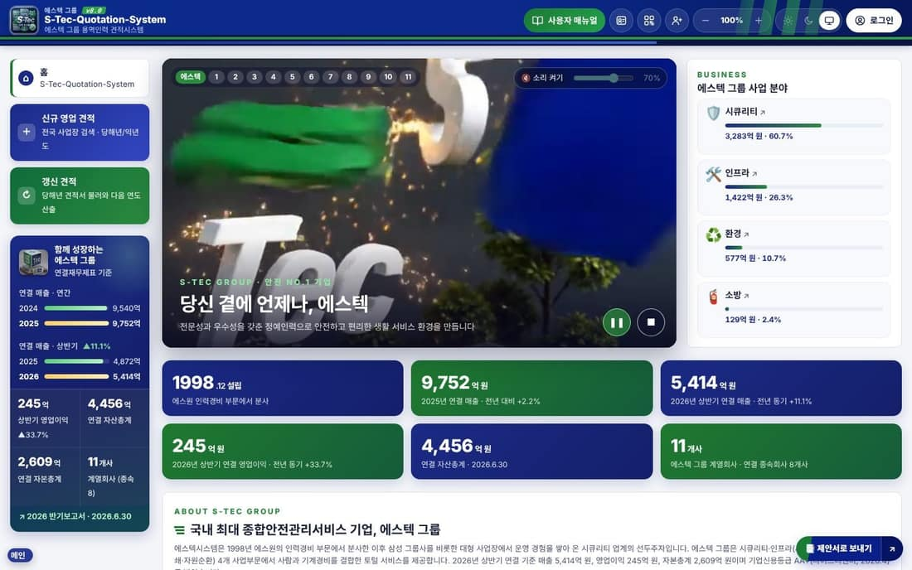
구분 | 내용 |
|---|---|
대상 | 프로그램을 쓰는 모든 사용자 |
프로그램 버전 | v8.0 |
주소 | https://sadness500-boop.github.io/s-tec-quotation-system/ |
차례
01 최신 버전 안내 (v8.0)
02 12개 프로그램 공통 화면
03 이 매뉴얼 보는 법
04 프로그램 한눈에 보기
05 프로그램 여는 법
06 홈 화면 살펴보기
07 처음 한 번만: 내 정보 등록
08 4-1. 로그인 · 내 계정
09 신규 영업 견적 만들기
10 갱신 견적 만들기
11 엑셀 견적서 보는 법
12 저장 · 불러오기 · 백업
13 자주 묻는 질문 · 문제 해결
1. 최신 버전 안내 (v8.0)
요점 이 매뉴얼은 v8.0 기준 · 이전 매뉴얼 v8.0 이후 바뀐 점 · 최신 화면 사진
이 매뉴얼은 에스텍 그룹 용역인력 견적시스템 v8.0 기준입니다. 이전 매뉴얼(v8.0) 이후 바뀐 점을 아래에 모았고, 각 장의 설명은 이전 매뉴얼 내용을 바탕으로 합니다. 2026년 11월 22일에 12개 프로그램의 상단 · 하단 · 글씨체 · 화면 배치를 통일했습니다(「12개 프로그램 공통 화면」 장).
그림 1. v8.0 메인 화면
바뀐 점 |
|---|
함께 쓰는 사이트 → 메인 프로그램 카드, 하단 좌·우 배치 · 제작자/날짜 간격, 근태관리 상단 선, 결과 칸 위로 |
에스텍 그룹 기준 · 사업장 목록 기준정보 연동, 글씨체 · 기본 글씨 크기 통일, 하단 서명 반짝임 제거, 빈 공간 없는 메인 화면 배치 |
상단 「The Best Choice」 삭제 · 프로그램명 버튼 높이로 축소, 하단 서명 · 날짜 왼쪽과 같은 글씨체, 하단 불필요 문구 삭제 |
상단·하단 보완 — 모바일 줄바꿈·서명 크기, 원래 Things to enjoy 숨김(함께 쓰는 사이트로 통일), 하단 배경 충돌 수정, 아이콘 늦게 채워지는 프로그램 대응 |
제작자 관리매뉴얼 공개 파일 삭제 — 제작자 전용 비공개 보관함으로 이전 |
상단·하단·함께 쓰는 사이트·프로그램별 사용자 매뉴얼 통일 |
제작자 관리매뉴얼 — 제작자만: 공개 파일·배포본에서 빼고 서버 비공개 보관함(owner-docs)에서 제작자 계정에게만 보기·내려받기 (통합관리시스템 공통) |
공통 상단 버튼(통합관리시스템과 같은 모양·새 아이콘): 사용자 매뉴얼 · 내 정보 · QR · 친구추천 · 화면 크기 · 테마 · 제작자 관리 콘솔(제작자만)/조직관리자 관리콘솔 · 계정 |
회사·조직별 공개 잠금 화면 + 신규/갱신 견적 세부 기능 권한 |
제안서 제작시스템 연동 — 「📑 제안서로 보내기」 추가 |
docs: v8.0 PPT 매뉴얼 호환성 수정(도형 ID 중복·이미지 형식·용량) + PDF판 |
S-Tec-Quotation-System_v8.0.html을 최신 index.html과 맞춤 |
docs: PPT 매뉴얼 jpg 형식 선언 보완 |
docs: v8.0 사용자·제작자 매뉴얼 (Word·PPT) |
공통 기준정보(회사·조직·사업장) 연결 · 「📂 자료」 엑셀 양식·작성 안내서(PDF)·불러오기 |
메인 화면 영상 교체 — 로고 영상 + 1~11번 새 영상 |
2. 12개 프로그램 공통 화면
요점 상단: 아이콘 · 에스텍 그룹 · 버전 · 프로그램명 · 기능 버튼 · 하단: 에스텍 그룹 · 프로그램명 | 제작자 · 오늘 날짜 · 같은 아이디로 12개 프로그램 · 📂 자료 — 에스텍 그룹 공통 기준정보
에스텍 운영 및 영업 통합관리 시스템(메인)과 11개 프로그램은 상단 · 하단 모양과 버튼이 모두 같습니다. 한 프로그램에서 익힌 사용법을 다른 프로그램에서도 그대로 쓸 수 있습니다.
상단
그림 2. 상단 — 왼쪽 아이콘 · 에스텍 그룹 · 버전 · 영문 · 한글 프로그램명, 오른쪽 기능 버튼
왼쪽 아이콘을 누르면 프로그램 첫 화면으로 돌아갑니다. 「에스텍 그룹」 옆의 초록 표시는 지금 쓰고 있는 프로그램 버전입니다.
버튼 | 하는 일 |
|---|---|
📘 사용자 매뉴얼 | 이 프로그램 사용자 매뉴얼을 화면에서 보고 Word · PPT · PDF로 내려받기 |
🪪 내 정보 | 내 아이디 · 역할 · 소속 조직 · 관리범위 · 사용기한 확인, 소속 · 연락처 고치기 |
다운로드 QR | 휴대폰 설치용 QR과 앱 내려받기 |
친구 추천 | 프로그램 주소를 동료에게 보내기 |
− 100% + | 화면 크기(글씨 크기) 조절 |
☀ / ☾ / ▣ | 주간 · 야간 · 시스템 화면 |
🛡 관리 콘솔 | 제작자에게는 「제작자 관리 콘솔」, 조직관리자에게는 「조직관리자 관리콘솔」로 보입니다(일반 사용자에게는 안 보임) |
계정(이름) | 로그인 · 로그아웃 · 비밀번호 변경 |
하단
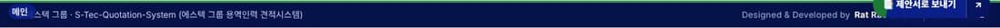
그림 3. 하단 — 왼쪽 「© 에스텍 그룹 · 프로그램명」, 오른쪽 「제작자 | 오늘 날짜」
하단 왼쪽에는 에스텍 그룹과 프로그램 이름이, 오른쪽에는 제작자(Designed & Developed by Rat Rae Choi)와 오늘 날짜가 나옵니다.
사용자 매뉴얼 보기 · 내려받기
그림 4. 📘 사용자 매뉴얼 — 화면에서 바로 보기, 장 목록 · 찾기, Word · PPT · PDF 내려받기
- 상단 「📘 사용자 매뉴얼」을 누르면 이 프로그램 매뉴얼이 화면에 열립니다(메인 프로그램은 통합 매뉴얼).
- 왼쪽 목록에서 장을 고르거나 찾기 칸에 낱말을 적어 찾습니다.
- 위쪽 Word · PPT · PDF 버튼으로 파일을 내려받습니다.
📂 자료 — 에스텍 그룹 공통 기준정보
화면 왼쪽 아래 「📂 자료」에서 회사(계열사) · 조직(본부 · 지사 · 지점) · 사업장을 엑셀로 넣습니다. 한 번 넣으면 12개 프로그램이 함께 씁니다. 사업장 목록은 에스텍 그룹 기준이라 다른 계열사 사업장도 함께 보입니다.
- 「📂 자료」 → 「입력 양식(엑셀) 받기」 또는 「현재 자료 받기」
- 엑셀의 「회사 · 조직 · 사업장」 시트에 한 줄에 하나씩 적기(머리글에 * 가 있는 칸은 꼭)
- 「엑셀 불러오기」 → 파일 고르기 → 미리보기 확인 → 「적용」
도움말 저장은 제작자 · 관리자만 할 수 있습니다. 실제 회사 · 지사 이름(예: 에스텍베스트 동부지사)은 서류에 그대로 쓰입니다. |
메인 프로그램과 함께 쓰는 사이트
메인 프로그램 첫 화면에는 12개 프로그램과 함께 「오늘의 뽑기판 · 팔도 제철맛길 · 팔도 축제길」 카드가 있습니다. 카드를 누르면 다시 로그인하지 않고 바로 열립니다.
3. 이 매뉴얼 보는 법
요점 용어 쉽게 풀기 · 이 매뉴얼은 컴퓨터를 잘 모르는 분도 그대로 따라 할 수 있게 만들었습니다.
이 매뉴얼은 컴퓨터를 잘 모르는 분도 그대로 따라 할 수 있게 만들었습니다. 화면 사진(스냅사진)을 보면서 순서대로 누르기만 하면 됩니다.
표시 | 뜻 |
|---|---|
빨간 동그라미 숫자 ①②③ | 사진 속 그 위치를 보라는 표시입니다. 사진 아래 표에 설명이 있습니다. |
굵은 파란 글씨 | 화면에 실제로 보이는 버튼·메뉴 이름입니다. |
💡 알아두면 좋아요 | 몰라도 되지만 알면 편한 내용입니다. |
⚠ 주의하세요 | 실수하기 쉬운 부분입니다. 꼭 읽어 주세요. |
용어 쉽게 풀기
용어 | 쉬운 뜻 |
|---|---|
클릭(누르기) | 마우스 왼쪽 버튼을 한 번 "딸깍" 누르는 것. 휴대폰은 손가락으로 한 번 톡 누르기. |
입력칸 | 글자나 숫자를 써 넣는 네모 칸. 한 번 누르면 깜빡이는 막대가 생기고, 그때 키보드로 쓰면 됩니다. |
선택상자(▼) | 오른쪽에 ▼가 있는 칸. 누르면 목록이 펼쳐지고, 그중 하나를 고릅니다. |
팝업(창) | 화면 위에 새로 뜨는 작은 창. 다 보면 닫기 나 바깥 어두운 곳을 누르면 사라집니다. |
산출내역서 | 견적 금액이 어떻게 계산됐는지 항목별로 보여 주는 표. |
부대비용 | 사람 인건비 외에 들어가는 차량·장비·소모품 등의 비용. |
4. 프로그램 한눈에 보기
요점 견적은 이렇게 만들어집니다 · 두 가지 견적 종류 · S-Tec-Quotation-System은 경비·미화·시설·주차 등 용역 견적서를 … · 이 아이콘이 프로그램의 얼굴입니다.
S-Tec-Quotation-System은 경비·미화·시설·주차 등 용역 견적서를 자동으로 계산해 주는 프로그램 입니다. 사람 수와 근무 형태만 넣으면 최저시급·4대보험·관리비·이윤까지 알아서 계산하고, 마지막에 엑셀 견적서 로 만들어 줍니다.
앱 아이콘
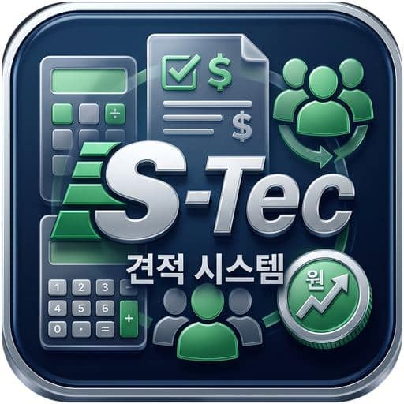
그림 5. 화면
▲ S-Tec 견적 시스템 앱 아이콘
이 아이콘이 프로그램의 얼굴입니다. 프로그램 왼쪽 위, 인터넷 창의 탭, 그리고 휴대폰·PC에 설치했을 때 바탕화면(홈 화면) 에 이 아이콘이 보입니다. 이 아이콘을 누르면 바로 프로그램이 열립니다.
견적은 이렇게 만들어집니다
순서 | 하는 일 | 걸리는 시간(예) |
|---|---|---|
1단계 사업장·기본정보 | 어느 사업장인지, 위치·용역 조건 입력 | 약 2분 |
2단계 인력 구성 | 몇 명이, 어떤 근무 형태로 일하는지 입력 | 약 3분 |
3단계 부대비용 | 차량·장비·기타 비용 고르기 | 약 2분 |
4단계 요율·기준 | 4대보험·관리비·이윤 확인 (대부분 그대로 두면 됨) | 약 1분 |
5단계 견적서 출력 | 견적서 확인 → 인쇄 또는 엑셀 저장 | 약 1분 |
두 가지 견적 종류
종류 | 언제 쓰나요? |
|---|---|
신규 영업 견적 | 새로운 고객사(사업장)에 처음 견적을 낼 때 |
갱신 견적 | 이미 계약 중인 고객사의 올해 견적서 파일을 불러와 다음 해 견적을 만들 때 |
5. 프로그램 여는 법
요점 방법 1. 인터넷 주소로 열기 (가장 쉬움, 추천) · 방법 2. 휴대폰에서 열기 · 안드로이드 휴대폰 (갤럭시 등) · 다운로드 QR · 친구 추천
도움말 ⚠ 주의하세요 프로그램 주소가 바뀌었습니다 (2026년 11월) — 새 주소: https://sadness500-boop.github.io/S-Tec-Quotation-System/ 예전 주소(…/Quotation-System/)로 설치한 PC 앱 · 북마크는 404 화면이 나옵니다. 예전 앱은 지우고(창 오른쪽 위 ⋮ → 제거) 새 주소에서 다시 설치 · 북마크하세요. |
방법 1. 인터넷 주소로 열기 (가장 쉬움, 추천)
- 컴퓨터에서 인터넷 창(크롬, 엣지 등)을 엽니다.
- 맨 위 주소창에 아래 주소를 입력하고 키보드의 Enter 키를 누릅니다.
도움말 사이트 주소 https://sadness500-boop.github.io/S-Tec-Quotation-System/ |
- 다음에 쉽게 열 수 있도록 즐겨찾기(북마크) 해 둡니다. 키보드에서 Ctrl 키를 누른 채 D 키를 누르고 완료 를 누르면 됩니다.
도움말 💡 알아두면 좋아요 카카오맵 지도는 이 인터넷 주소로 열었을 때 가장 잘 동작합니다. |
방법 2. 휴대폰에서 열기
안드로이드 휴대폰 (갤럭시 등)
- 휴대폰 카메라로 프로그램 홈 화면 위쪽의 다운로드 QR 을 비추면 사이트 주소가 열립니다.
- 인터넷 창 오른쪽 위 ⋮(점 3개) → 홈 화면에 추가 를 누르면 앱처럼 아이콘이 생깁니다.
- 설치용 앱(APK) 파일을 받은 경우: 파일을 눌러 설치 를 누르면 됩니다. "출처를 알 수 없는 앱" 안내가 나오면 허용 을 눌러 주세요.
아이폰
- 사파리로 사이트 주소를 엽니다.
- 아래쪽 가운데 공유(네모에 위 화살표) 버튼을 누릅니다.
- 홈 화면에 추가 → 추가 를 누르면 아이콘이 생깁니다.
다운로드 QR · 친구 추천
홈 화면 맨 위에 있는 다운로드 QR 과 친구 추천 버튼을 누르면 사이트 주소와 QR코드가 크게 나옵니다. 동료에게 알려 줄 때 사용하세요.
▲ 다운로드 QR | ▲ 친구 추천 |
|---|---|
그림 6. 화면
그림 7. 화면
- 주소 복사 : 주소를 복사합니다. 카카오톡 대화창에 길게 눌러 붙여넣기 하면 됩니다.
- 공유하기 (휴대폰): 카카오톡·문자 등으로 바로 보낼 수 있습니다.
- 사이트 열기 : 사이트를 새 창으로 엽니다.
PC 크롬에 북마크하고 앱으로 설치하기
다운로드 QR이나 친구 추천으로 받은 주소를 크롬에서 열고, 북마크 해 두었다가 앱으로 설치 하면 바탕화면 아이콘으로 바로 열 수 있습니다. 앱처럼 따로 창이 뜨고, 새 버전이 나오면 저절로 바뀝니다.
① 크롬에서 사이트 열기
- 홈 화면의 다운로드 QR (또는 친구 추천 )을 누릅니다.
- 사이트 열기 를 누르면 크롬에 사이트가 열립니다. (받은 주소를 주소 복사 → 크롬 주소창에 붙여넣기 → Enter 해도 됩니다)
- 주소창에 sadness500-boop.github.io/S-Tec-Quotation-System 이 보이면 맞게 열린 것입니다.
② 북마크(즐겨찾기) 하기
그림 8. 화면
▲ 크롬 주소창 오른쪽 — ① 북마크 별 · ② 메뉴(⋮) · Ⓐ 앱 설치 아이콘
- 주소창 오른쪽의 ☆(별) 아이콘을 누릅니다. (키보드 Ctrl + D 도 같습니다)
- 이름이 "S-Tec-Quotation-System…"으로 들어가 있으면 그대로 두고, 폴더는 북마크바 를 고릅니다.
- 완료 를 누르면 별이 파란색으로 바뀌고, 주소창 아래 북마크바에 생깁니다.
③ 앱으로 설치하기
- 크롬 오른쪽 위 ⋮(점 3개) 메뉴를 누릅니다. (위 사진의 ②)
- 메뉴 아래쪽의 캐스팅, 저장, 공유 에 마우스를 올립니다. (아래 사진의 ③)
- 옆에 펼쳐진 메뉴의 저장 부분에서 S-Tec-Quotation-System · 에스텍 그룹 용역인력 견적시스템 설치… 를 누릅니다. (아래 사진의 ④)
- "앱을 설치하시겠습니까?" 창이 뜨면 설치 를 누릅니다.
- 설치가 끝나면 프로그램이 새 창으로 열리고, 바탕화면과 시작 메뉴 에 S-Tec 견적 시스템 앱 아이콘 (1장 사진)이 생깁니다.
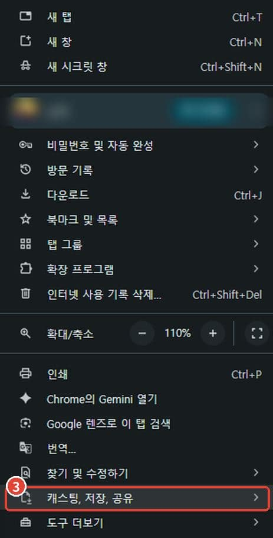
그림 9. 화면
▲ ③ ⋮ 메뉴 → 캐스팅, 저장, 공유
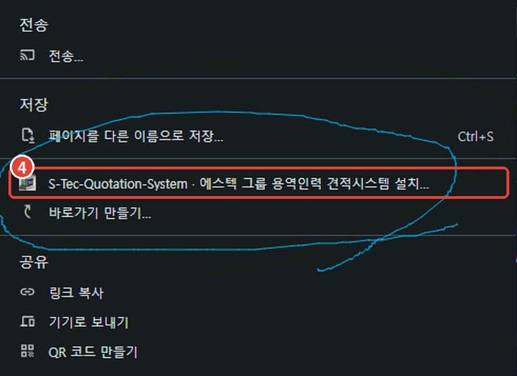
그림 10. 화면
▲ ④ 저장 → S-Tec-Quotation-System · 에스텍 그룹 용역인력 견적시스템 설치…
도움말 💡 알아두면 좋아요 주소창 오른쪽의 설치 아이콘(Ⓐ, 모니터에 아래 화살표) 을 눌러도 바로 설치할 수 있습니다. 바로가기 만들기… 는 아이콘만 만드는 방법입니다. 가능하면 설치… 를 고르세요. 다음부터는 바탕화면의 S-Tec 아이콘을 두 번 누르면 바로 열립니다. |
도움말 ⚠ 주의하세요 메뉴에 설치… 가 보이지 않으면 사이트를 인터넷 주소(https://sadness500-boop.github.io/S-Tec-Quotation-System/) 로 열었는지 확인하세요. 내려받은 HTML 파일로 열면 설치 메뉴가 나오지 않습니다. 이미 설치되어 있으면 설치… 대신 S-Tec-Quotation-System 열기 가 보입니다. |
6. 홈 화면 살펴보기
요점 왼쪽 아래 「메인」 · 「📂 자료」 버튼 (Ver 8.0) · 화면 색 보는 법 · 화면 모드 바꾸기 · 위쪽 버튼 모음 (견적 작성 중)
프로그램을 열면 가장 먼저 보이는 화면입니다. 사진의 번호를 아래 표와 맞춰 보세요.
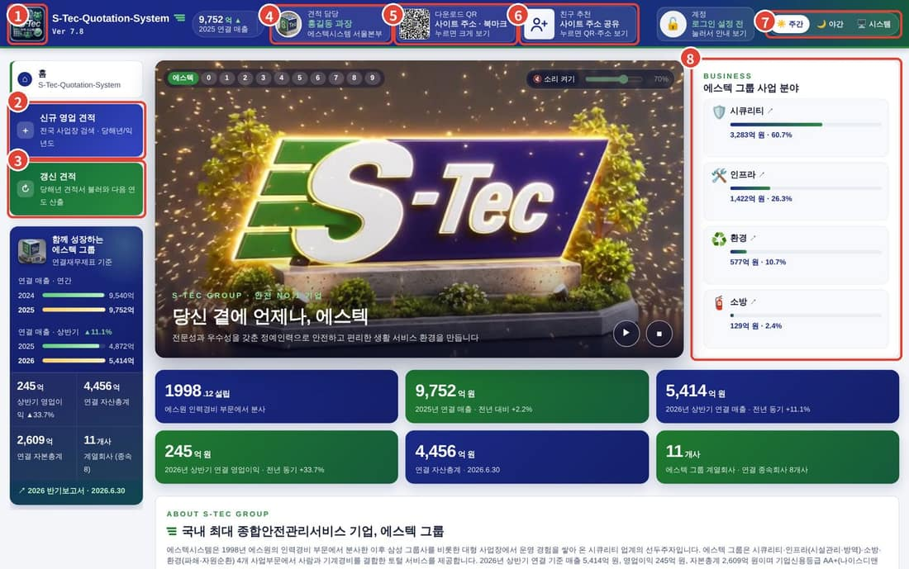
그림 11. 화면
▲ 홈 화면 (번호는 아래 표 참고)
번호 | 이름 | 무엇을 하나요? |
|---|---|---|
1 | 앱 아이콘 | S-Tec 견적 시스템 아이콘입니다. 누르면 언제든 홈 화면으로 돌아옵니다. |
2 | 신규 영업 견적 | 새 고객사 견적을 시작합니다. (5장) |
3 | 갱신 견적 | 기존 견적서 파일을 불러와 다음 해 견적을 만듭니다. (6장) |
4 | 견적 담당 | 내 이름·직책·연락처를 등록합니다. 견적서에 자동으로 들어갑니다. (4장) |
5 | 다운로드 QR | 사이트 주소 QR코드. 누르면 크게 보입니다. |
6 | 친구 추천 | 동료에게 사이트 주소를 보낼 때 씁니다. |
7 | 화면 모드 | 주간 (밝게) · 야간 (어둡게) · 시스템 (컴퓨터 설정 따라감) |
8 | 사업 분야 | 영상 오른쪽의 에스텍 그룹 사업 분야(시큐리티·인프라·환경·소방). 누르면 홈페이지 해당 페이지가 열립니다. |
메인 영상
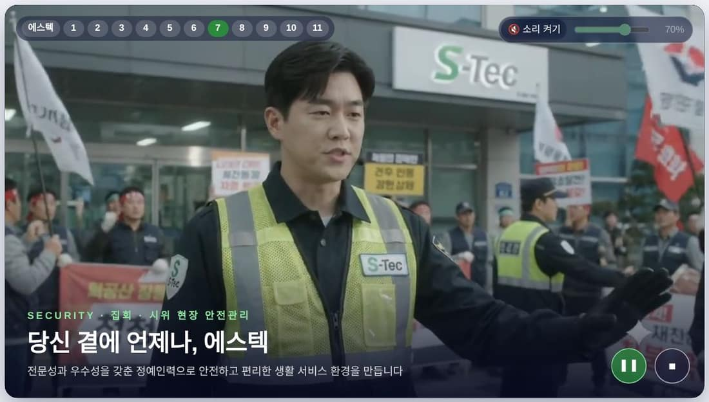
그림 12. 화면
▲ 메인 영상 (Ver 8.0) — 위쪽 번호 버튼 에스텍 · 1 ~ 11 · 오른쪽 아래 재생/멈춤 · 오른쪽 사업 분야
- S-Tec 로고 영상 → 1번 ~ 11번 영상 이 차례로 이어서 나오고, 끝나면 처음부터 다시 나옵니다.
- 영상이 바뀔 때 모자이크 · 스르륵 · 흐림 확대 · 원형 열림 효과가 번갈아 나옵니다.
- 왼쪽 위 에스텍 · 1 ~ 11 번호를 누르면 그 영상으로 바로 넘어갑니다. 지금 영상 번호는 녹색입니다.
- 오른쪽 아래 ▶/❚❚ = 재생·일시정지, ■ = 멈추고 처음으로.
- 오른쪽 위 소리 켜기 와 음량 막대로 소리를 조절합니다.
왼쪽 아래 「메인」 · 「📂 자료」 버튼 (Ver 8.0)
그림 13. 화면
▲ 화면 왼쪽 아래 — 「메인」(통합 프로그램으로) · 「📂 자료」(엑셀 양식 · 불러오기)
버튼 | 하는 일 |
|---|---|
메인 | 에스텍 운영 및 영업 통합관리 시스템(메인 프로그램) 으로 갑니다. 같은 아이디로 이미 로그인되어 있어 다시 로그인할 필요가 없습니다. |
📂 자료 | 회사 · 조직 · 사업장 자료를 엑셀 양식으로 받아 작성하고 불러오는 창을 엽니다. (8장 참고) |
화면 색 보는 법
보이는 모양 | 뜻 |
|---|---|
남색 바탕 | 프로그램의 기본 색입니다. |
녹색 세 줄 ≡ (제목 앞) | 에스텍 로고의 줄무늬를 본뜬 표시입니다. 카드·문서의 제목 앞에 붙습니다. |
맨 위 바 아래 녹색 선 | 에스텍 로고 색(남색 + 녹색)을 나타냅니다. |
단계 메뉴 왼쪽 녹색 선 | 지금 보고 있는 단계입니다. |
입력칸 녹색 테두리 | 지금 입력하고 있는 칸입니다. |
녹색 버튼·탭 | 선택된 문서 탭(견적서/산출내역서)이나 열린 메뉴입니다. |
화면 모드 바꾸기
그림 14. 화면
눈이 피곤하면 야간 을 눌러 보세요. 화면이 어둡게 바뀝니다.
그림 15. 화면
▲ 야간 모드 화면
위쪽 버튼 모음 (견적 작성 중)
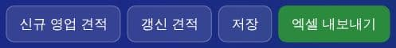
그림 16. 화면
버튼 | 하는 일 |
|---|---|
신규 영업 견적 | 새 견적을 처음부터 다시 시작 |
갱신 견적 | 기존 견적서 파일 불러오기 |
저장 | 지금 작성 중인 견적을 이 컴퓨터(브라우저)에 저장 |
엑셀 내보내기 | 완성된 견적을 엑셀 파일로 저장 |
7. 처음 한 번만: 내 정보 등록
요점 엑셀 견적서의 담당 칸과 표지 하단에 들어갈 내 정보를 한 번만 등록해 두면, 이후… · 홈 화면 맨 위의 견적 담당 버튼을 누릅니다. 견적 담당 · 내 정보 등록 창이 열… · 내 사진 : 사진 넣기 를 누르고 사진 파일을 고릅니다. 사진 가운데를 정사각형으로… · 이름 (꼭 입력), 직책 , 소속 을 입력합니다.
엑셀 견적서의 담당 칸과 표지 하단에 들어갈 내 정보를 한 번만 등록해 두면, 이후 모든 견적서에 자동으로 들어갑니다.
- 홈 화면 맨 위의 견적 담당 버튼을 누릅니다. 견적 담당 · 내 정보 등록 창이 열립니다.
- 내 사진 : 사진 넣기 를 누르고 사진 파일을 고릅니다. 사진 가운데를 정사각형으로 잘라 동그랗게 보여 줍니다. (안 넣으면 에스텍 로고가 보입니다)
- 이름 (꼭 입력), 직책 , 소속 을 입력합니다.
- 휴대폰 , 사무실 , 이메일 을 입력합니다.
- 아래 상자에 엑셀 견적서 담당 칸 에 들어갈 문구가 바로 보입니다. 확인하고 저장 을 누릅니다.
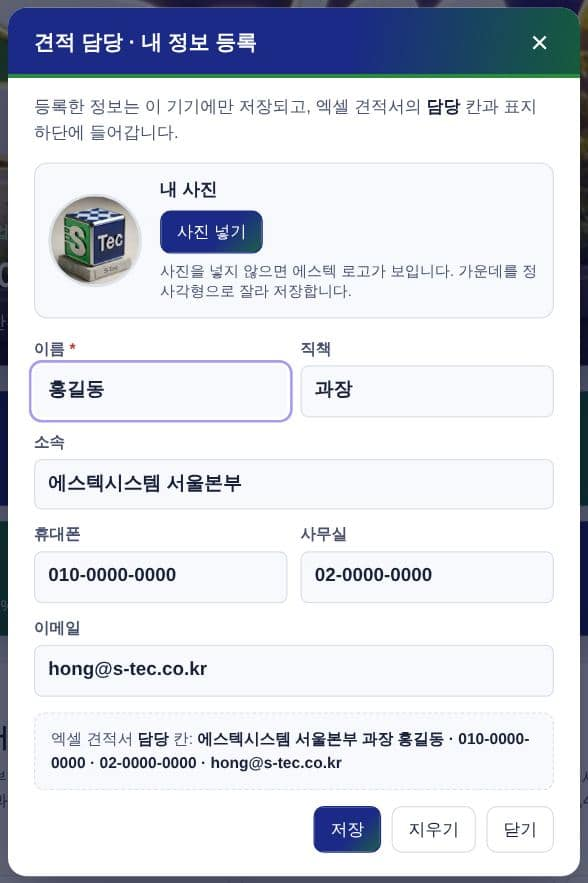
그림 17. 화면
▲ 견적 담당 · 내 정보 등록 창 (예시: 홍길동 과장)
버튼 | 하는 일 |
|---|---|
사진 넣기 / 사진 빼기 | 사진을 넣거나 뺍니다. 빼면 에스텍 로고로 돌아갑니다. |
저장 | 입력한 정보를 저장합니다. 이름이 비어 있으면 저장되지 않습니다. |
지우기 | 등록한 정보를 모두 지웁니다. |
닫기 / × | 저장하지 않고 창을 닫습니다. |
도움말 💡 알아두면 좋아요 저장하면 맨 위 견적 담당 버튼에 내 사진이 동그랗게 보이고, 이름이 초록색 으로 바뀝니다. 소속 에 계열사 이름(예: 에스텍베스트 동부지사)을 쓰면 그 회사가 새 견적의 공급자 로 자동 선택됩니다. 견적마다 바꾸려면 4단계 공급자 정보 에서 고르세요. 로그인 기능을 쓰면 입력한 정보가 같은 아이디의 모든 기기 에 자동으로 들어갑니다. 로그인 없이 쓰면 지금 쓰는 PC(휴대폰)에만 저장됩니다. |
8. 4-1. 로그인 · 내 계정
요점 처음 쓰는 분: 가입 신청 · 로그인이 안 될 때 나오는 화면 · 계정은 승인됐는데 이 프로그램만 막힐 때 · 비밀번호를 잊었을 때
에스텍 통합 로그인 — 하나의 아이디(이메일)로 에스텍 프로그램 5개(Complaint 대응 · 단기 견적 · 사업장 지도 · 용역 견적 · 업무량 산정)를 함께 씁니다. 근태관리 프로그램과 같은 아이디입니다.
Ver 7.5부터 아이디(이메일)로 로그인 해서 쓰는 기능이 생겼습니다. 제작자가 로그인 기능을 켜면, 프로그램을 열 때 아래 로그인 화면이 먼저 나옵니다. 아직 켜지 않았다면 로그인 없이 예전처럼 바로 쓰면 됩니다.
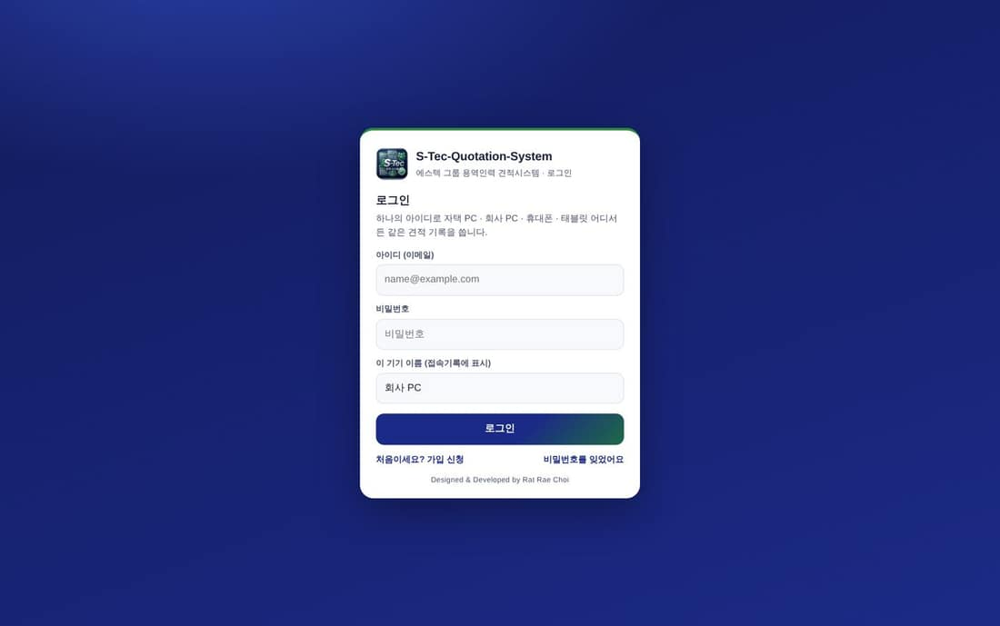
그림 18. 화면
▲ 로그인 기능이 켜졌을 때 — 프로그램을 열면 로그인 화면이 먼저 나옵니다
처음 쓰는 분: 가입 신청
- 로그인 화면 아래의 처음이세요? 가입 신청 을 누릅니다.
- 이름 · 소속(부서) · 연락처 를 입력합니다.
- 아이디(이메일) 와 비밀번호(8자 이상) 를 두 번 입력합니다.
- 가입 신청 을 누릅니다.
- 메일함에 인증 메일이 오면 메일 속 링크 를 한 번 누릅니다. (안 보이면 스팸함도 확인)
- 제작자가 승인 하면 그때부터 로그인해서 쓸 수 있습니다.
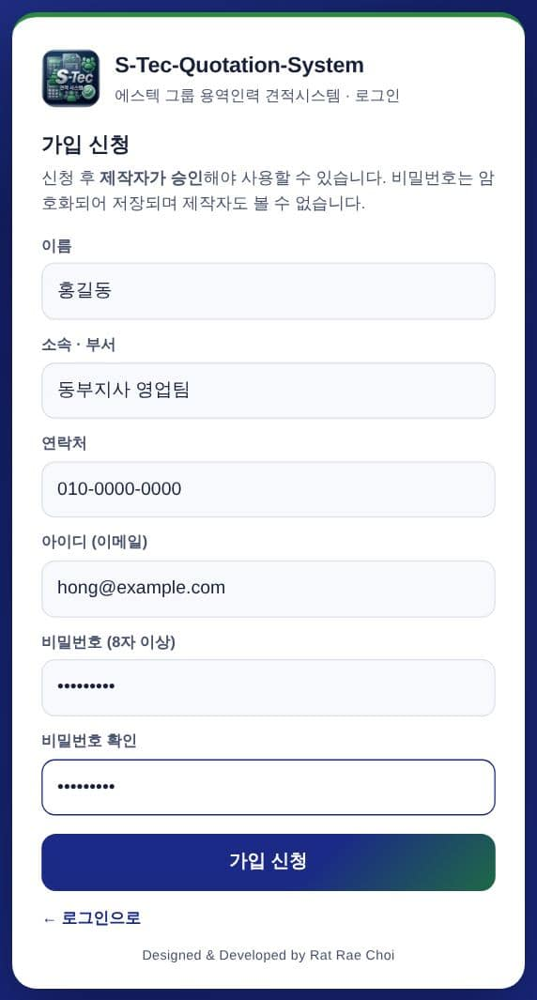
그림 19. 화면
▲ 가입 신청 화면 (예시: 홍길동)
도움말 💡 알아두면 좋아요 비밀번호는 암호화 되어 저장되므로 제작자도 볼 수 없습니다. 본인만 기억해 두세요. |
로그인하기
- 아이디(이메일) 와 비밀번호 를 입력합니다.
- 이 기기 이름 에 알아보기 쉬운 이름을 씁니다. 예: 자택 PC, 회사 PC, 휴대폰
- 로그인 을 누릅니다. 다음부터는 이 기기에서 로그인 상태가 유지됩니다.
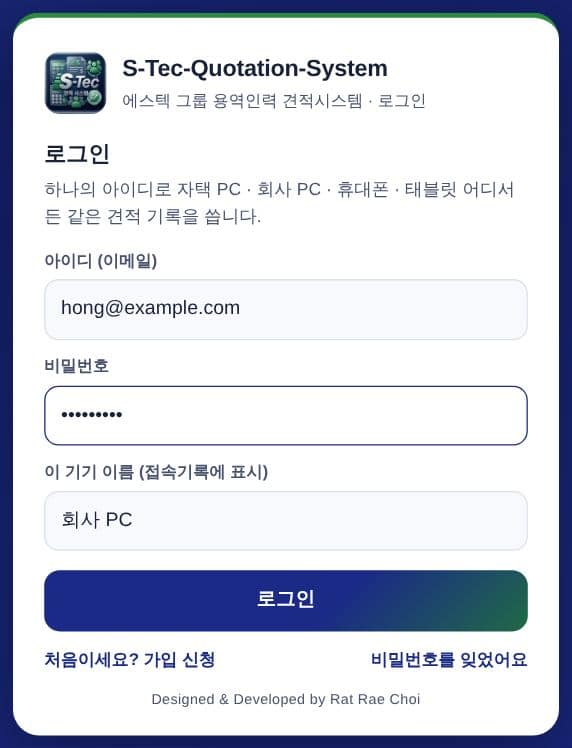
그림 20. 화면
▲ 로그인 화면
로그인이 안 될 때 나오는 화면
화면 | 뜻 · 할 일 |
|---|---|
⏳ 승인 대기 중 | 가입 신청은 접수됐고 제작자 승인을 기다리는 중입니다. 승인 연락을 받으면 다시 확인 을 누르세요. |
📅 사용기한 만료 | 사용기한이 지났습니다. 제작자에게 연장을 요청하세요. |
⛔ 사용이 중지된 계정 | 접속이 차단된 계정입니다. 제작자에게 문의하세요. |
📵 이 기기는 사용 제한 | 이 기기에서는 못 쓰도록 설정됐습니다. 다른 기기를 쓰거나 제작자에게 문의하세요. |
🛠️ 프로그램 점검 중 | 제작자가 점검 중입니다. 안내 문구를 보고 잠시 뒤 다시 확인 을 누르세요. |
📶 인터넷 연결 필요 | 인터넷을 연결한 뒤 다시 확인 을 누르세요. (한 번 로그인한 기기는 24시간 동안 인터넷 없이도 쓸 수 있습니다) |
▲ 승인 대기 화면 | ▲ 사용기한 만료 화면 |
|---|---|
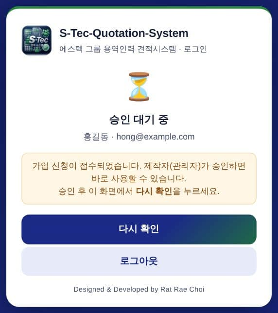
그림 21. 화면
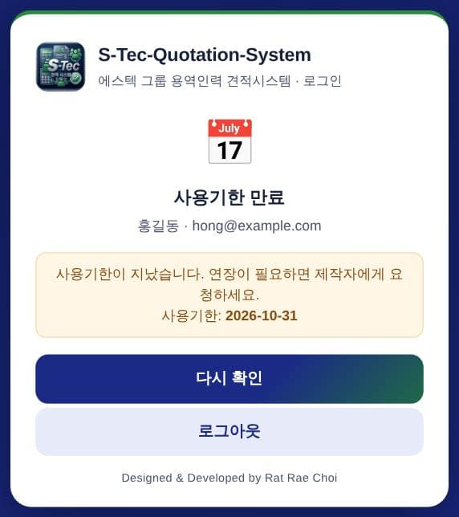
그림 22. 화면
▲ 프로그램 점검 중 (제작자 안내 문구가 보임) | ▲ 이 기기는 사용 제한 |
|---|---|
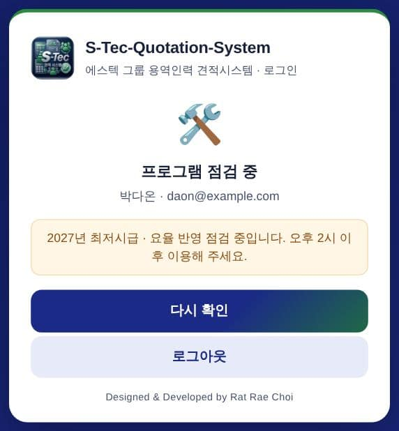
그림 23. 화면
그림 24. 화면
계정은 승인됐는데 이 프로그램만 막힐 때
통합 로그인에서는 계정 승인 과 프로그램별 사용 권한 이 따로 있습니다. 계정은 승인됐어도 이 프로그램(용역 견적) 권한이 없거나 기한이 지나면 아래 화면이 나옵니다.
▲ 🔐 이 프로그램 사용 권한이 없습니다 | ▲ 📅 이 프로그램 사용기한이 지났습니다 |
|---|---|
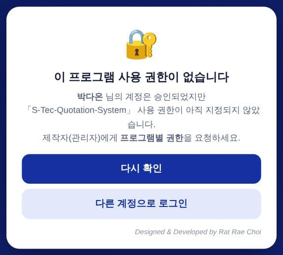
그림 25. 화면
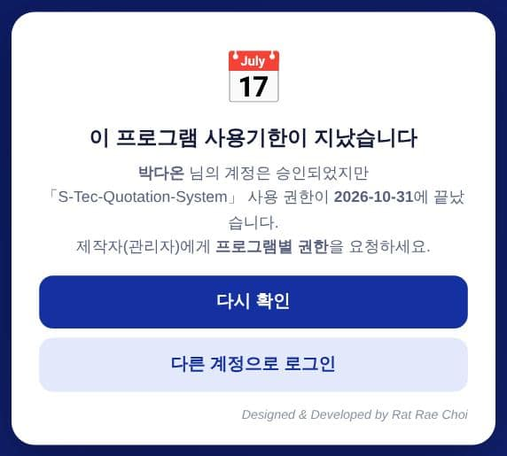
그림 26. 화면
- 제작자(관리자)에게 용역 견적 프로그램 권한 을 요청합니다.
- 권한을 받으면 다시 확인 을 누릅니다. 바로 쓸 수 있습니다.
- 다른 아이디로 들어가려면 다른 계정으로 로그인 을 누릅니다.
비밀번호를 잊었을 때
- 로그인 화면의 비밀번호를 잊었어요 를 누릅니다.
- 가입한 이메일을 쓰고 재설정 메일 보내기 를 누릅니다.
- 메일의 링크를 누르면 새 비밀번호 를 정하는 화면이 열립니다.
메일을 받을 수 없으면 제작자에게 임시 비밀번호 를 요청하세요. 임시 비밀번호로 로그인하면 바로 새 비밀번호 정하기 화면이 나오고, 본인만 아는 비밀번호로 바꿔야 계속 쓸 수 있습니다.
그림 27. 화면
▲ 비밀번호를 잊었을 때
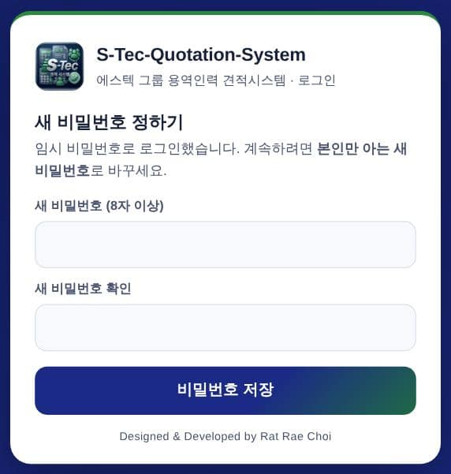
그림 28. 화면
▲ 임시 비밀번호로 로그인했을 때 — 새 비밀번호 정하기
내 계정 카드와 메뉴
그림 29. 화면
▲ 위쪽 파란 막대 — 주간·야간 버튼 왼쪽의 내 계정 카드
위쪽 파란 막대의 내 계정 카드에 내 이름과 역할, 마지막 동기화 시각이 보입니다. 카드를 누르면 메뉴가 열립니다.
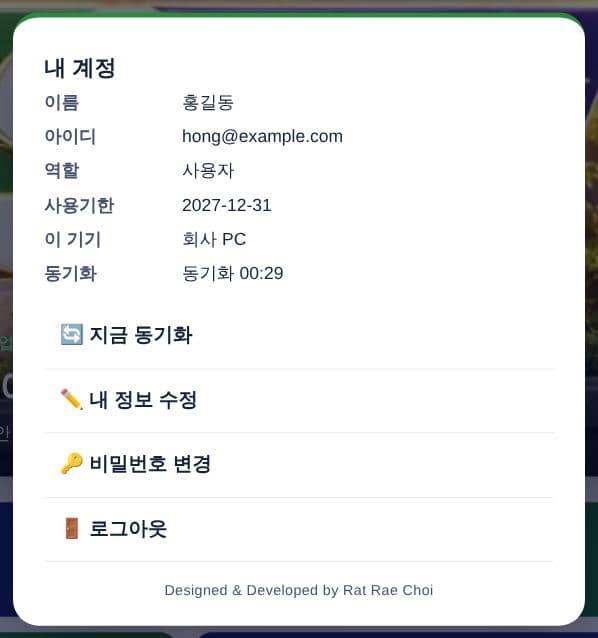
그림 30. 화면
▲ 내 계정 메뉴
메뉴 | 하는 일 |
|---|---|
🔄 지금 동기화 | 다른 기기에서 저장한 견적을 바로 가져오고, 이 기기의 견적을 올립니다. |
✏️ 내 정보 수정 | 이름 · 소속 · 연락처 · 이 기기 이름을 고칩니다. |
🔑 비밀번호 변경 | 새 비밀번호(8자 이상)를 두 번 입력하고 비밀번호 저장 을 누릅니다. |
🚪 로그아웃 | 이 기기에서 로그아웃합니다. 여럿이 같이 쓰는 PC에서는 다 쓰고 꼭 로그아웃하세요. |
여러 기기에서 같은 견적 쓰기
같은 아이디로 로그인하면 자택 PC · 회사 PC · 휴대폰 · 태블릿 어디서든 아래 항목이 자동으로 똑같이 맞춰집니다.
- 저장된 견적 목록 (견적 보관함)
- 작성 중인 견적
- 견적 담당(내 정보) — 사진·이름·연락처
- 화면 모드 (주간 · 야간 · 시스템)
도움말 💡 알아두면 좋아요 다른 기기에서 저장한 내용은 로그인하거나 지금 동기화 를 누르면 들어옵니다. 들어오면 화면이 한 번 새로고침됩니다. 같은 기기에서 다른 사람이 로그인하면, 앞사람의 견적은 화면에서 지워지고 그 사람 계정(서버)에만 남습니다. |
도움말 ⚠ 주의하세요 아이디와 비밀번호는 다른 사람과 같이 쓰지 마세요 . 제작자가 접속기록과 기기 목록을 보고 있으며, 함께 쓰면 접속이 차단될 수 있습니다. |
에스텍 통합 로그인 — 한 번 로그인으로 8개 프로그램
이제 메인 프로그램(에스텍 운영 및 영업 통합관리 시스템) 과 용역 견적 · 사업장 지도 · 근태관리 등 에스텍 프로그램이 한 번 로그인으로 함께 열립니다. 한 곳에서 로그인하면 다른 프로그램은 바로 들어가지고, 한 곳에서 로그아웃하면 함께 로그아웃됩니다.
도움말 💡 알아두면 좋아요 예전 로그인은 처음 한 번 자동으로 옮겨집니다. 아이디 · 비밀번호는 그대로입니다. |
새 기기 승인 대기
그림 31. 화면
▲ 처음 쓰는 기기 — 제작자(관리자)가 승인해야 사용
- 처음 쓰는 PC · 휴대폰으로 로그인하면 📲 새 기기 승인 대기 화면이 나올 수 있습니다.
- 제작자(관리자)에게 이 기기 이름 (예: 회사 PC)을 알려 승인을 요청합니다.
- 승인되면 다시 확인 을 누릅니다. 바로 쓸 수 있습니다.
조회 전용 기기
그림 32. 화면
▲ 위쪽 갈색 안내 — 이 기기는 조회 전용입니다
제작자가 이 기기를 조회 전용 으로 정하면 화면 위쪽에 🔒 안내가 나오고, 저장 · 삭제 · 등록 버튼이 흐리게 잠깁니다. 견적은 볼 수 있지만 저장되지 않습니다. 저장이 필요하면 제작자에게 요청하세요.
개별 앱 → 통합 앱 「S-Tec Operations」 (2026-12-18까지 함께 사용)
휴대폰에 설치한 이 프로그램만의 앱(APK) 은 2026년 12월 18일까지 함께 쓸 수 있습니다. 그동안 화면 아래에 📢 안내와 설치 버튼이 나옵니다.
- 📢 안내의 설치 (또는 왼쪽 아래 통합 앱 버튼)를 눌러 S-Tec Operations 앱을 내려받아 설치합니다.
- 같은 아이디 · 비밀번호로 로그인하면 8개 프로그램을 한 앱에서 씁니다.
- 설치 후 이 개별 앱은 지워도 됩니다. 12월 19일부터 개별 앱은 「통합 앱으로 옮겨 주세요」 화면만 나옵니다.
9. 신규 영업 견적 만들기
요점 시작: 견적 연도 고르기 · 1단계 · 사업장 · 기본정보 · ① 사업장 이름 입력 → 위치 찾기 · ② 카카오맵 · 내 위치
시작: 견적 연도 고르기
- 홈 화면에서 신규 영업 견적 을 누릅니다.
- 창이 뜨면 2026년 당해년 견적 또는 2027년 익년도 견적 중 하나를 누릅니다. (연도마다 최저시급·4대보험 요율이 달라서 고르는 것입니다)
- 계약 시작일·종료일 을 확인하고, 오른쪽 아래 견적 시작 버튼을 누릅니다.
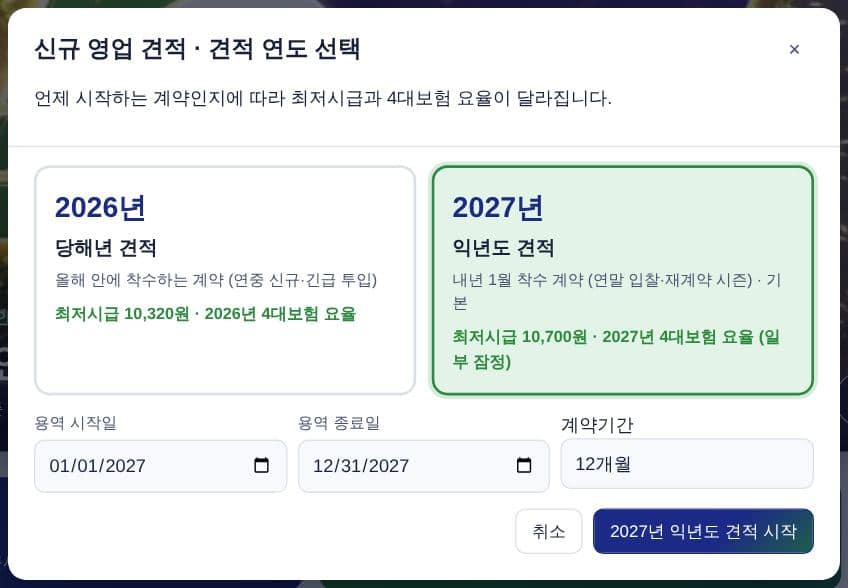
그림 33. 화면
▲ 견적 연도 선택 창
도움말 💡 알아두면 좋아요 보통 내년 1월부터 시작하는 계약이면 2027년 익년도 견적 을 고르면 됩니다. |
1단계 · 사업장 · 기본정보
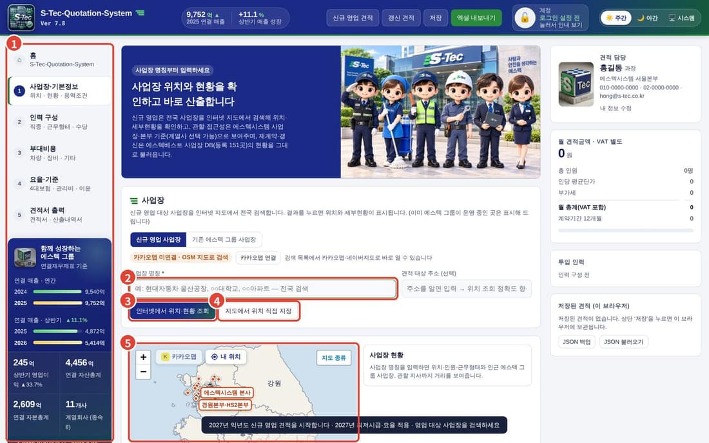
그림 34. 화면
▲ 1단계 화면
번호 | 이름 | 무엇을 하나요? |
|---|---|---|
1 | 단계 메뉴 | 왼쪽의 1~5단계. 누르면 그 단계로 바로 이동합니다. 왼쪽에 녹색 선이 있는 칸 = 지금 단계, 녹색 번호 = 이미 입력한 단계. |
2 | 사업장 명칭 | 고객사 이름을 입력합니다. 예: ○○대학교, ○○아파트 |
3 | 인터넷에서 위치·현황 조회 | 입력한 이름으로 위치를 찾아 지도에 표시하고 주변 정보를 보여 줍니다. |
4 | 지도에서 위치 직접 지정 | 검색이 안 될 때, 지도를 직접 눌러 위치를 정합니다. |
5 | 지도 | 에스텍 사업장·본부 위치와 우리 사업장 위치를 보여 줍니다. |
① 사업장 이름 입력 → 위치 찾기
- 업장 명칭 칸을 누르고 고객사 이름을 입력합니다.
- 입력하면 아래에 추천 목록이 뜹니다. 맞는 이름을 누르세요.
- 인터넷에서 위치·현황 조회 버튼을 누릅니다.
- 지도에 빨간 핀이 꽂히고, 오른쪽에 사업장 현황 (가까운 에스텍 사무소까지 거리 등)이 나옵니다.
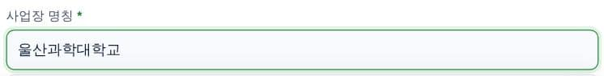
그림 35. 화면
▲ 이름을 입력하면 추천 목록이 뜹니다
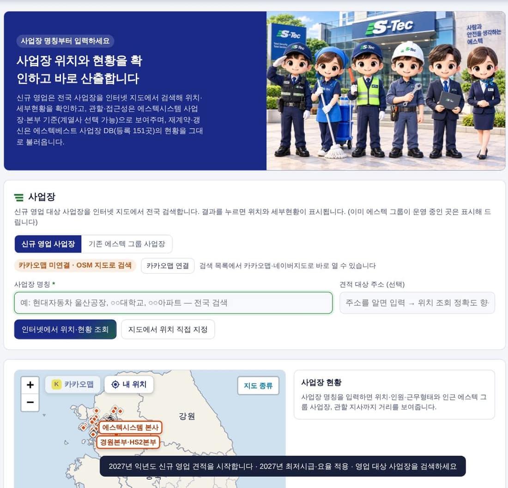
그림 36. 화면
▲ 위치 조회 결과
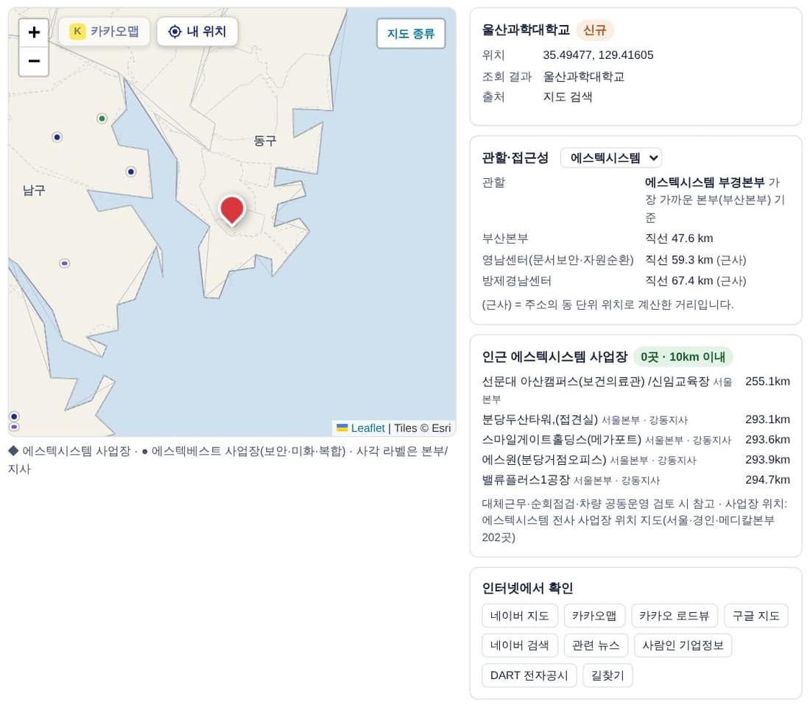
그림 37. 화면
▲ 지도와 사업장 현황
② 카카오맵 · 내 위치
지도 왼쪽 위의 카카오맵 버튼을 누르면 카카오 지도로 바뀝니다. 내 위치 버튼을 누르면 지금 내가 있는 곳을 찾아 줍니다.
기기 | 내 위치를 찾는 방법 |
|---|---|
휴대폰 | GPS(위성)로 찾습니다. "위치 권한 허용?" 이 뜨면 허용 을 누르세요. |
PC | 인터넷 주소(IP)로 대략 찾습니다. 더 정확하게 를 누르면 와이파이 기반으로 다시 찾습니다. |
그래도 안 맞을 때 | 지도에서 직접 지정 을 누르고 지도에서 정확한 위치를 누르세요. |
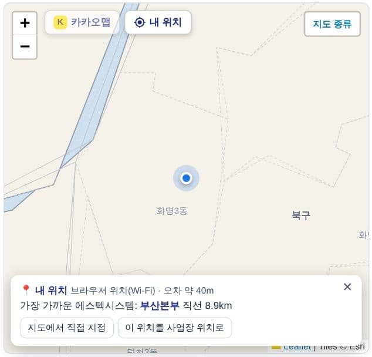
그림 38. 화면
▲ 내 위치 결과 — 가장 가까운 에스텍 사무소까지 거리 표시
내 위치가 바로 사업장이면 이 위치를 사업장 위치로 를 누르면 됩니다.
③ 에스텍 그룹 조직 현황
에스텍시스템 또는 계열사 버튼을 누르면 조직도가 아래로 펼쳐집니다. 한 번 더 누르면 접힙니다. 어느 본부·지사가 관할하는지 참고할 때 보세요.
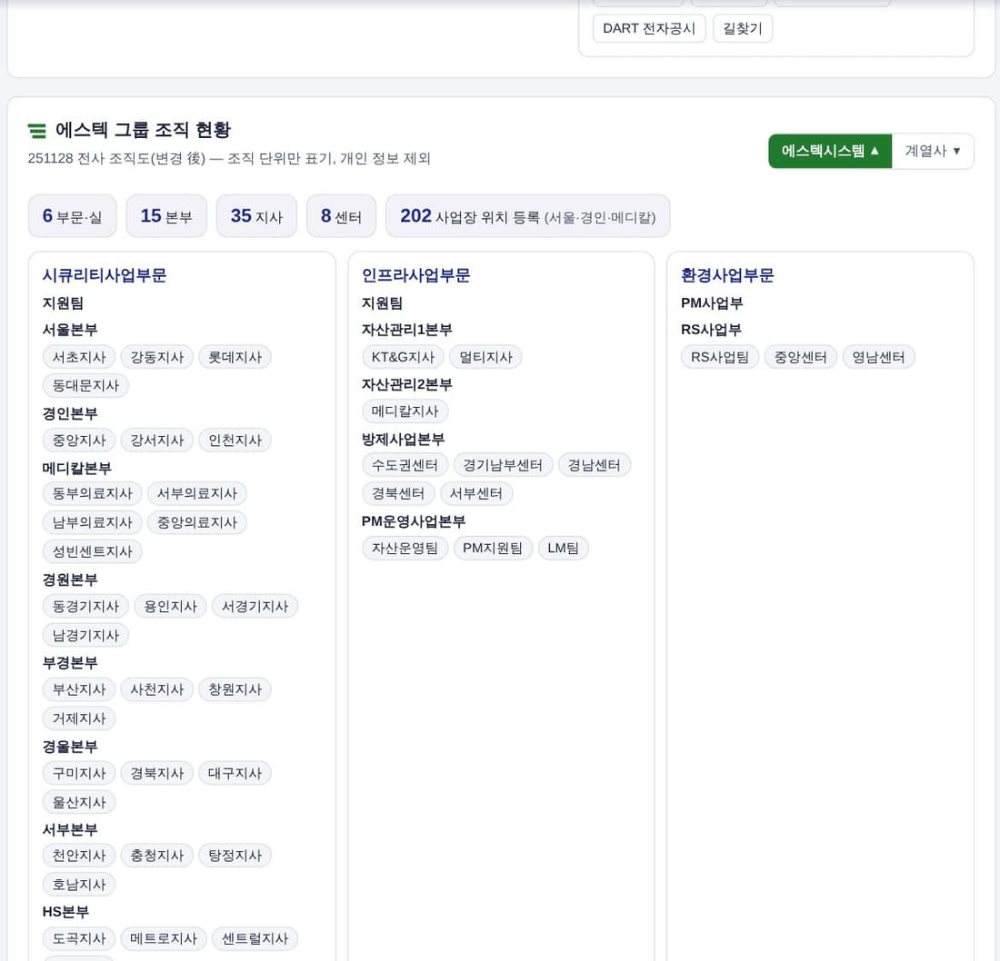
그림 39. 화면
▲ 조직 현황 (조직 단위만 표시)
④ 용역 조건
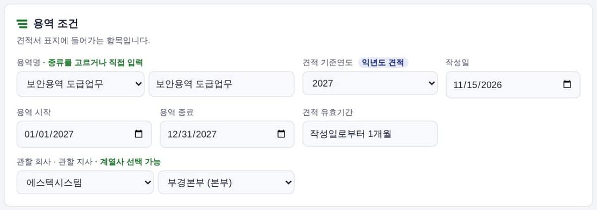
그림 40. 화면
▲ 용역 조건 입력
항목 | 입력 방법 |
|---|---|
용역명 | ▼를 눌러 보안·미화·시설·주차… 중 고릅니다. 목록에 없으면 기타(직접 입력) 을 고르고 직접 씁니다. |
계약 기간 | 시작일·종료일을 확인합니다. |
관할 회사 | ▼를 눌러 에스텍시스템 또는 계열사를 고릅니다. |
관할 지사 | 관할 회사를 고르면 그 회사의 지사 목록이 나옵니다. 담당 지사를 고릅니다. |
다 입력했으면 왼쪽 메뉴의 2 인력 구성 을 누르세요.
2단계 · 인력 구성
그림 41. 화면
▲ 2단계 화면
번호 | 이름 | 무엇을 하나요? |
|---|---|---|
1 | 직종 추가 | 보안·미화·주차·시설관리·특수직군·기타직군 사진을 누르면 그 직종의 사람이 한 줄 추가됩니다. |
2 | 인력 카드 | 추가된 사람(직급)별 근무 조건 카드. 숫자를 바꾸면 금액이 바로 다시 계산됩니다. |
3 | 월 견적금액 | 오른쪽에 지금까지의 월 견적금액이 실시간으로 보입니다. |
사람 추가하기
- 위쪽 직종 추가 에서 원하는 직종 사진을 누릅니다. (예: 보안(경비))
- 아래에 카드가 하나 생깁니다.
- 같은 직종이라도 팀장 1명 + 요원 4명 처럼 직급이 다르면 사진을 한 번 더 눌러 카드를 하나 더 만듭니다.
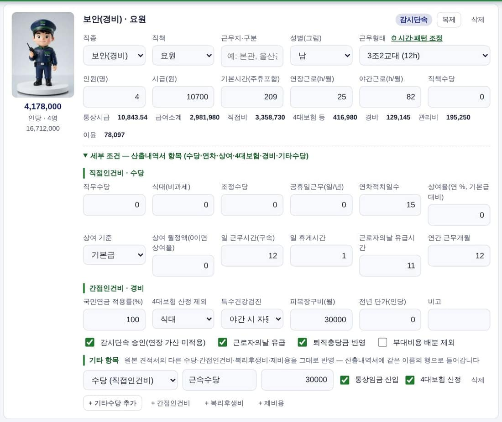
그림 42. 화면
▲ 인력 카드 하나의 모습
칸 이름 | 넣는 값 (예) |
|---|---|
직종 / 직책 | 보안(경비) / 팀장, 요원 등 ▼에서 선택 |
인원(명) | 이 조건으로 일하는 사람 수. 예: 4 |
시급(원) | 보통 최저시급이 자동으로 들어갑니다. 더 주는 경우 고칩니다. |
근무형태 | ▼에서 선택. 예: 주간 주5일, 3조2교대(12h), 격일제 등. 고르면 기본시간·연장·야간 시간이 자동으로 들어갑니다. |
연장근로·야간근로(h) | 한 달 시간. 근무형태를 고르면 자동으로 채워집니다. |
직책수당 | 팀장 수당 등. 없으면 0 |
도움말 ⚠ 주의하세요 연장·야간·공휴일 수당은 시간 × 통상시급 으로 자동 계산됩니다. 금액을 직접 넣지 말고 시간 만 확인하세요. |
업종과 근로구분 (보안 / 일반직군)
직종에 따라 근로구분 이 정해지고, 연장근로수당 계산 방법이 달라집니다.
업종 | 근로구분 | 연장근로 계산 |
|---|---|---|
보안(경비) | 감시단속 (승인 시) 또는 일반근로 | 감시단속 승인: 연장시간 × 1.0배 / 승인 안 함: × 1.5배 |
미화 · 주차 · 시설 · 특수 · 기타 | 일반근로 (일반직군) | 연장시간 × 1.5배 가산 |
일반근로 공통 | 주40시간 한도 | 기본시간이 월 209시간(주40시간+주휴) 을 넘으면, 넘는 시간은 기본급이 아니라 연장근로(1.5배) 로 자동 계산 |
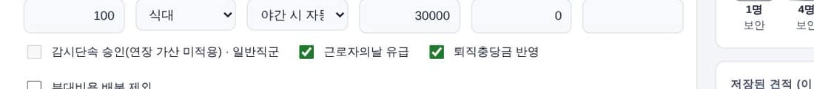
그림 43. 화면
▲ 미화 카드: 감시단속 체크칸이 잠겨 있고 ‘일반직군’으로 표시됩니다
근무 시간·패턴 조정 (특수 교대 근무)
근무형태 목록에 없는 근무(시간이 다른 주간 근무, 12일 교대 등)는 근무형태 글자 옆 ⏱ 시간·패턴 조정 을 눌러 직접 정합니다.
- ⏱ 시간·패턴 조정 을 누릅니다.
- ① 근무 패턴 에서 주5일·3조2교대·격일제·12일 교대 등을 고르거나, 하루 한 글자씩 직접 씁니다. 예: 주주야야휴주주야야야휴휴 (주=주간, 야=야간, 당=당직, 휴=휴무, 비=비번)
- ② 날짜별 근무 시간 에 주기의 날짜가 한 줄씩 나옵니다 (주5일은 월~일, 12일 패턴은 1~12일차).
- 날마다 근무조를 고르고 시작·종료 시각(10분 단위) 과 휴게시간 을 고칩니다. 휴무·비번 날은 0시간입니다.
- ④ 계산 결과 의 월 기본·연장·야간 시간을 확인하고 이 근무형태로 적용 을 누릅니다.
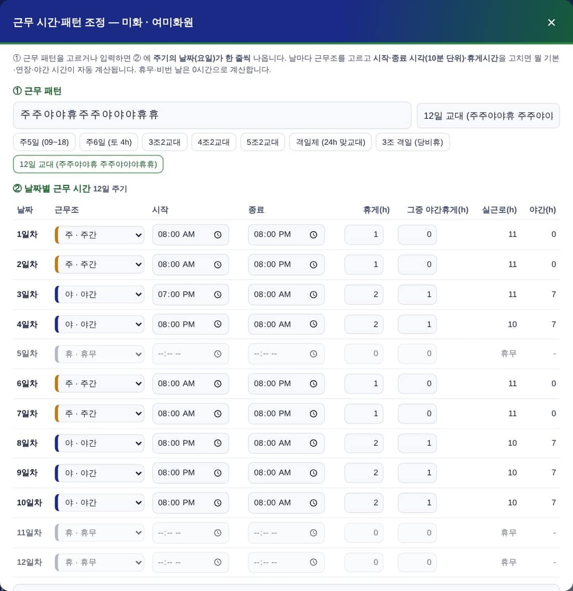
그림 44. 화면
▲ 날짜별 근무 시간 — 12일 교대에서 3일차 야간만 19시 시작
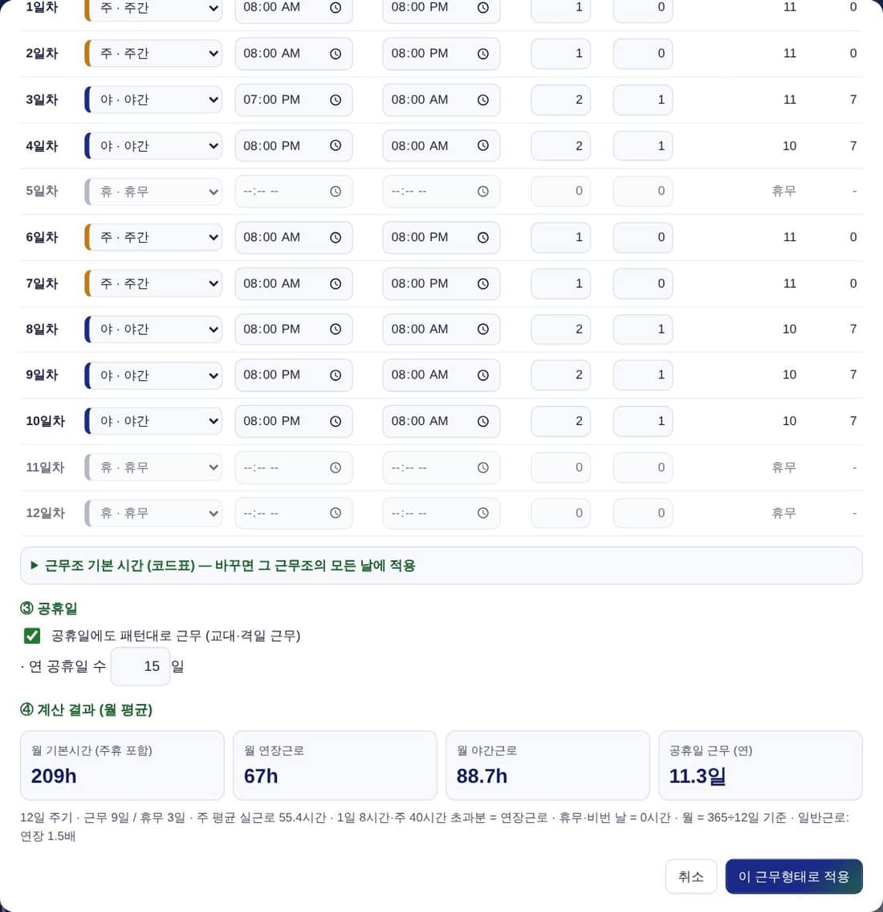
그림 45. 화면
▲ 근무조 기본 시간(코드표) · 공휴일 · 계산 결과
계산 기준 | 내용 |
|---|---|
연장근로 | 하루 8시간을 넘는 시간 + 주 40시간을 넘는 시간 |
야간근로 | 22시 ~ 06시 사이 근무 (야간 휴게시간은 뺌) |
월 시간 | 365 ÷ 12일 기준 평균 |
공휴일 | ‘공휴일에도 패턴대로 근무’를 체크하면 연 공휴일 수 × 근무일 비율 |
근무조 기본 시간 | 접힌 ‘코드표’에서 바꾸면 그 근무조가 들어간 모든 날에 한 번에 적용 |
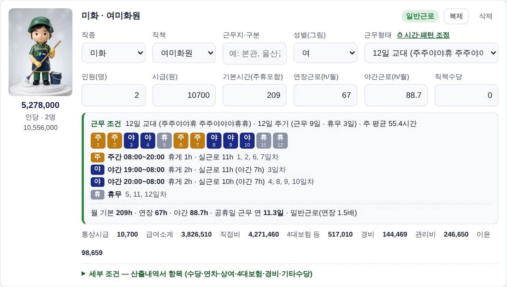
그림 46. 화면
▲ 적용 후 인력 카드 — 근무 조건 요약
적용하면 인력 카드에 근무 조건 상자가 생겨 날짜별 색 띠, 근무조별 시각·휴게·실근로 시간과 해당 요일(일차), 월 기본·연장·야간 시간을 한눈에 보여 줍니다.
도움말 💡 알아두면 좋아요 감시단속 승인 체크칸은 보안(경비) 카드에서만 누를 수 있습니다. 다른 업종은 자동으로 일반근로입니다. 카드 오른쪽 위의 표시( 감시단속 / 일반근로 )로 지금 상태를 확인할 수 있습니다. |
세부 조건 (필요할 때만)
카드 아래 ▸ 세부 조건 을 누르면 상여, 퇴직금, 4대보험 산정 제외, 피복비 등 자세한 항목이 펼쳐집니다. 이 항목들은 엑셀 산출내역서와 같은 이름, 같은 순서 로 되어 있습니다.
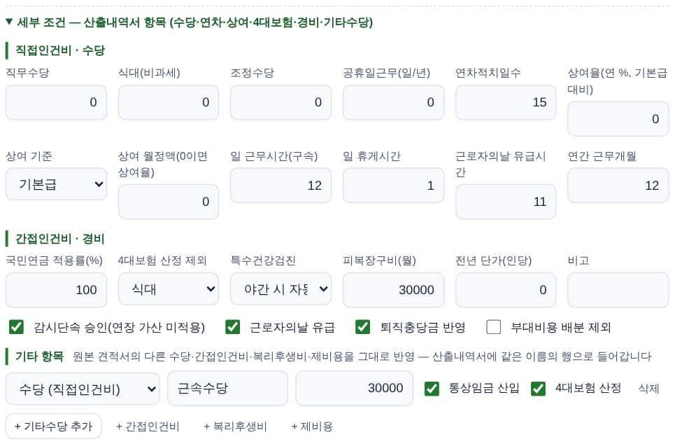
그림 47. 화면
▲ 세부 조건 펼친 모습
기타 항목 추가하기
목록에 없는 수당이나 비용이 있으면 세부 조건 맨 아래의 + 기타수당 / + 간접인건비 / + 복리후생비 / + 제비용 버튼을 누릅니다.
- 원하는 버튼을 누르면 한 줄이 생깁니다.
- 이름 (예: 근속수당)과 월 금액 을 입력합니다.
- 기타수당은 체크칸 2개가 있습니다. 통상임금 산입 : 연장·야간 수당 계산에 포함할지 / 4대보험 산정 : 보험료 계산에 포함할지. 잘 모르면 그대로 두세요.
3단계 · 부대비용 (차량 · 장비 · 기타)
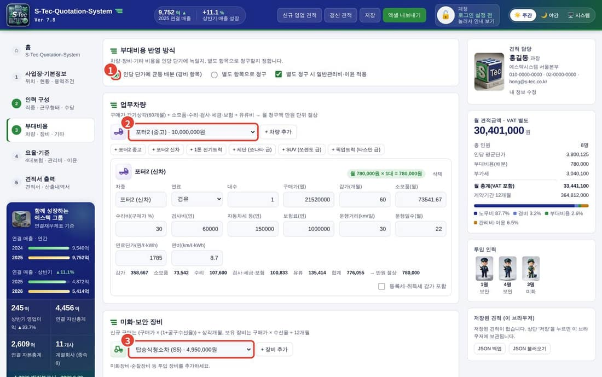
그림 48. 화면
▲ 3단계 화면
번호 | 이름 | 무엇을 하나요? |
|---|---|---|
1 | 반영 방식 | 인당 단가에 균등 배분 (기본) 또는 별도 항목으로 청구 중 하나를 고릅니다. |
2 | 업무차량 | ▼에서 차량을 고르고 + 차량 추가 |
3 | 미화·보안 장비 | ▼에서 장비를 고르고 + 장비 추가 |
차량 · 장비 고르기
- ▼를 눌러 목록에서 원하는 차량(또는 장비)을 고릅니다.
- 고르면 사진과 업체 참고 가격 이 있는 창이 뜹니다.
- 가격을 확인하고 + 이 장비 추가 (또는 + 차량 추가 )를 누릅니다.
- 추가된 항목에서 대수·구매가·감가(개월) 등을 고칠 수 있습니다. 월 비용은 자동 계산됩니다.
▲ 차량 사진·가격 창 | ▲ 장비 사진·업체 가격 창 |
|---|---|
그림 49. 화면
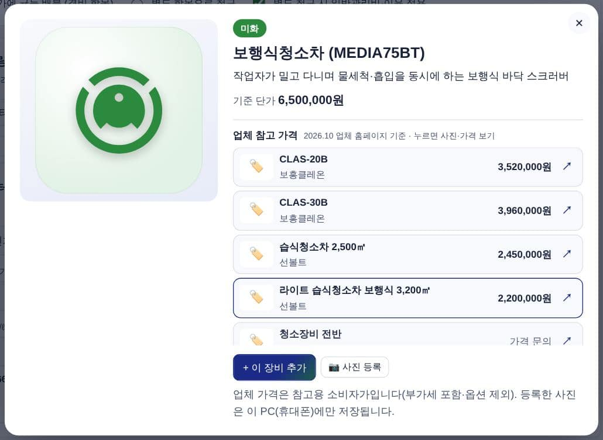
그림 50. 화면
교육·자격 비용
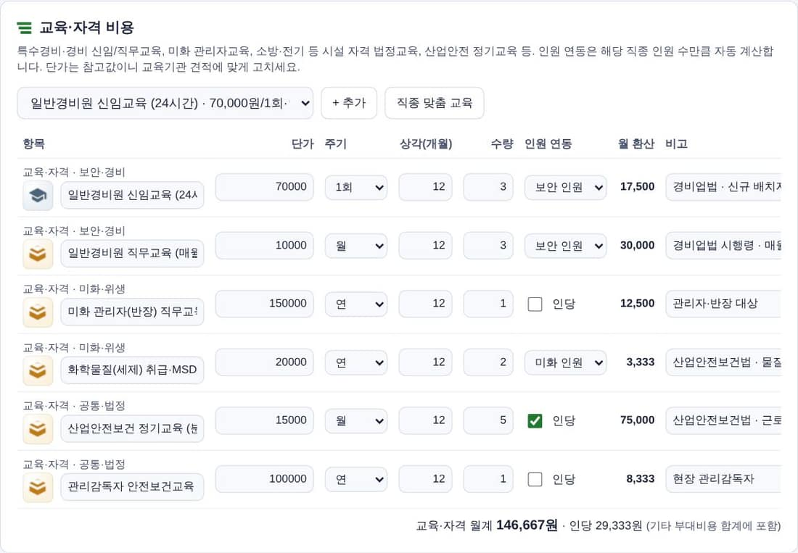
그림 51. 화면
▲ 교육·자격 비용 — 직종 맞춤 교육을 누른 모습
경비·특수경비 신임/직무교육, 미화 관리자교육, 소방·전기 등 시설 자격 법정교육, 산업안전 정기교육 등을 비용까지 견적에 넣습니다.
- 목록에서 교육을 고르고 + 추가 를 누르거나, 직종 맞춤 교육 을 눌러 투입 직종에 맞는 교육을 한 번에 넣습니다.
- 인원 연동 이 ‘보안 인원’이면 보안 인원 수만큼, ‘전체 인원’이면 모든 인원 수만큼 자동으로 곱합니다.
- 3년 1회 교육 등은 주기 1회 · 상각(개월) 로 월 비용이 계산됩니다.
- 단가는 참고값입니다. 교육기관 견적에 맞게 고쳐 주세요.
도움말 💡 알아두면 좋아요 특수경비 교육(88시간 신임 등)은 국가중요시설에만 해당하므로 자동 추천에서 빠져 있습니다. 필요하면 목록에서 골라 추가하세요. 교육·자격 월계는 부대비용 합계와 엑셀 ‘부대비용’ 시트에 함께 들어갑니다. |
기타 부대비용
안전보호구, 통신비, 교육비 등은 기타 부대비용 에서 ▼로 고른 뒤 + 추가 를 누릅니다. 직종 맞춤 추천 을 누르면 입력한 직종에 맞는 항목을 한 번에 넣어 줍니다.
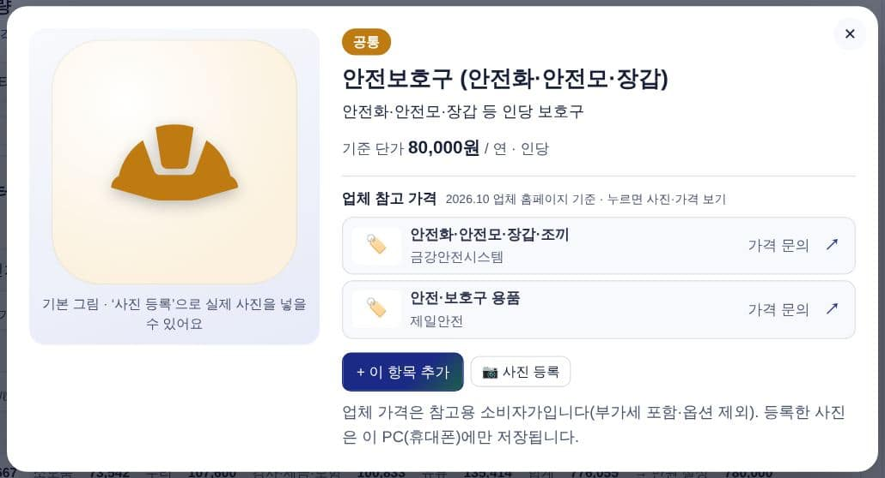
그림 52. 화면
▲ 기타 부대비용 창
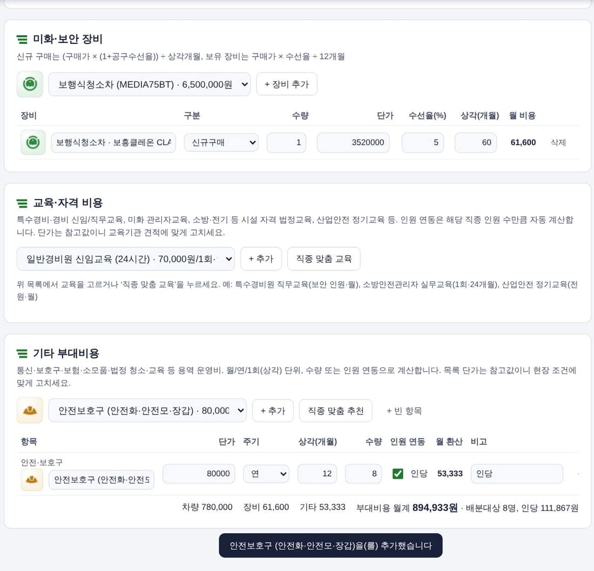
그림 53. 화면
▲ 부대비용을 넣은 모습 — 아래에 부대비용 월계가 나옵니다
4단계 · 요율 · 기준
최저시급, 4대보험 요율, 관리비·이윤을 확인하는 단계입니다. 대부분은 그대로 두면 됩니다.
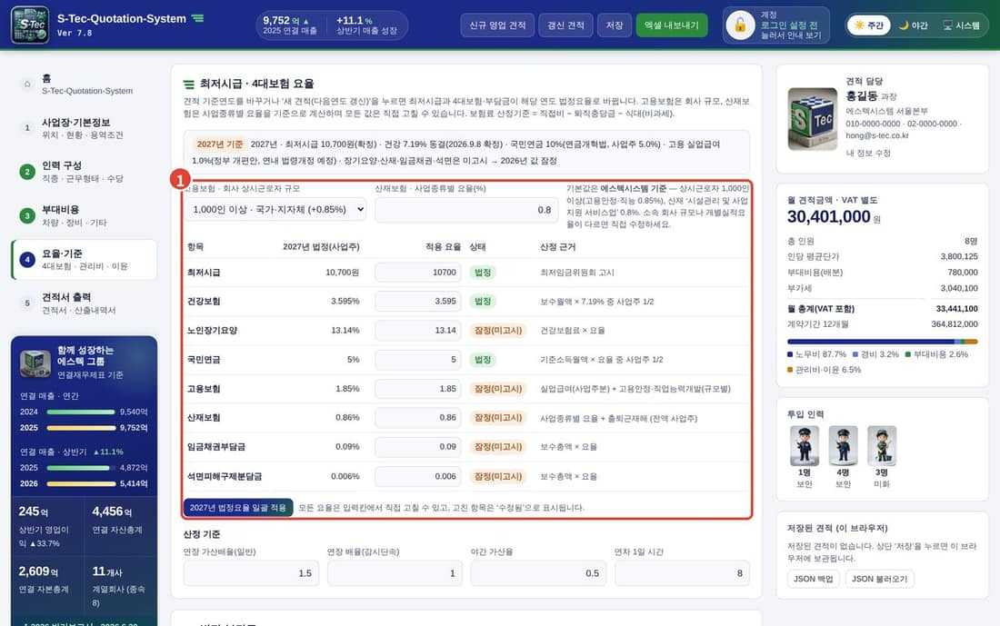
그림 54. 화면
▲ 4단계 화면
번호 | 이름 | 무엇을 하나요? |
|---|---|---|
1 | 4대보험 요율표 | 연도에 맞는 법정 요율이 자동으로 들어갑니다. 회사 규모·산재 업종을 고르면 고용·산재 요율이 바뀝니다. |
도움말 💡 알아두면 좋아요 4대보험 요율은 에스텍시스템 기준 으로 들어갑니다. (고용 1,000인 이상 → 2027년 1.85%, 산재 0.8% + 출퇴근 0.06% = 0.86%) 법정 (초록) = 확정된 요율, 잠정(미고시) (주황) = 아직 발표 전이라 예상값입니다. 고친 항목은 "수정됨"으로 표시됩니다. |
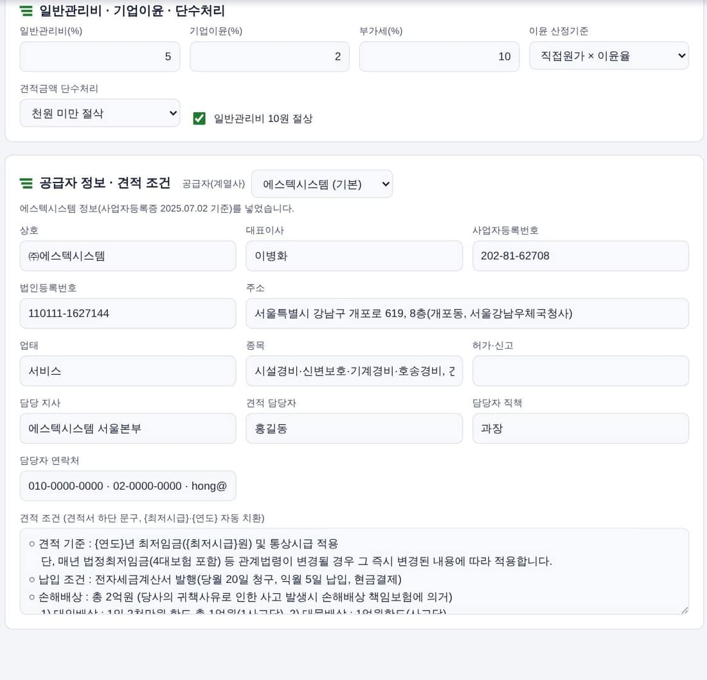
그림 55. 화면
▲ 아래쪽: 일반관리비·이윤 / 공급자 정보·견적 조건
항목 | 설명 |
|---|---|
일반관리비(%) | 기본 5%. 고객사와 합의한 값이 있으면 고칩니다. |
기업이윤(%) | 기본 2%. |
견적금액 단수처리 | 천원 미만 절삭 등 끝자리 처리 방법 |
공급자 정보 | ▼에서 견적을 내는 회사(에스텍시스템/계열사)를 고르면 상호·대표·주소가 자동으로 바뀝니다. |
견적 조건 | 견적서 아래쪽에 들어가는 문구. 필요하면 고칩니다. |
5단계 · 견적서 출력
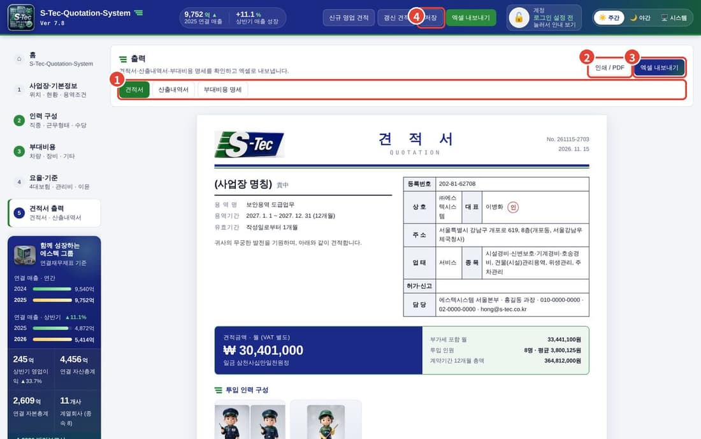
그림 56. 화면
▲ 5단계 화면
번호 | 이름 | 무엇을 하나요? |
|---|---|---|
1 | 문서 탭 | 견적서 / 산출내역서 / 부대비용 명세 를 눌러 각 문서를 봅니다. |
2 | 인쇄 / PDF | 종이로 인쇄하거나 PDF로 저장합니다. |
3 | 엑셀 내보내기 | 엑셀 견적서 파일을 만듭니다. (7장 참고) |
4 | 저장 | 이 견적을 이 PC에 저장해 나중에 다시 열 수 있습니다. |
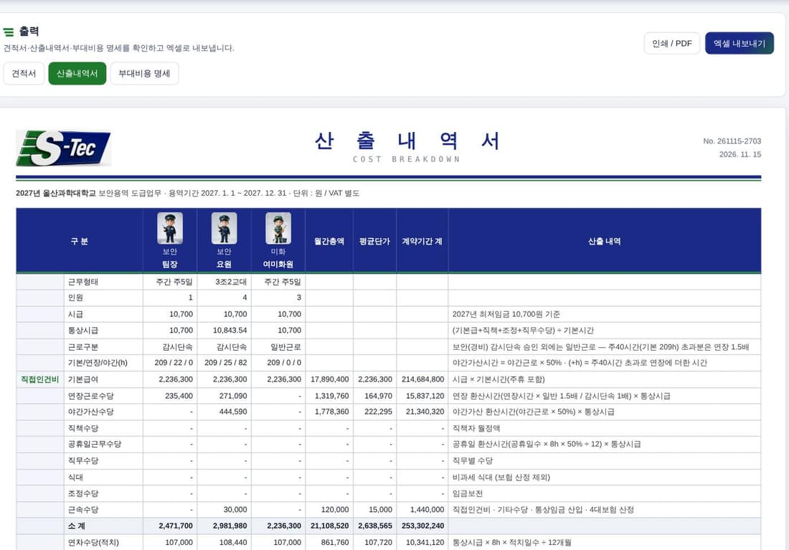
그림 57. 화면
▲ 산출내역서 탭 — ‘근로구분’ 줄에 감시단속 / 일반근로가 표시됩니다
PDF로 저장하기
- 인쇄 / PDF 를 누릅니다.
- 인쇄 창의 대상(프린터) 을 PDF로 저장 으로 바꿉니다.
- 저장 을 누르고 저장할 위치를 고릅니다.
엑셀로 저장하기
- 엑셀 내보내기 를 누릅니다.
- 화면 아래(또는 오른쪽 위)에 다운로드 표시가 뜹니다. 파일은 보통 다운로드 폴더에 저장됩니다.
- 파일을 두 번 누르면 엑셀이 열립니다.
10. 갱신 견적 만들기
요점 갱신 견적의 계산 원칙 · 올해(2026) 산출내역서는 이렇게 만들어집니다 (Ver 8.0) · 이미 계약 중인 고객사의 올해 견적서(엑셀) 파일 을 불러오면, 같은 인원·수당 구… · 불러온 견적서의 양식이 어떻든 아래 규칙으로 「5.
이미 계약 중인 고객사의 올해 견적서(엑셀) 파일 을 불러오면, 같은 인원·수당 구성으로 내년 견적 을 자동으로 만들어 줍니다. 고객사마다 양식이 달라도 항목을 찾아서 그대로 옮겨 옵니다.
따라 하기
- 홈 화면 또는 위쪽 버튼에서 갱신 견적 을 누릅니다.
- 창의 파일에서 불러오기 영역에서 견적서 파일 선택 을 누르고, 고객사의 올해 견적서 엑셀 파일을 고릅니다. (파일을 창 위로 끌어다 놓아도 됩니다)
- 불러온 결과(인원·시급·금액)가 표로 나옵니다. 원래 파일의 금액과 같은지 확인합니다.
- 2027년 갱신 견적 만들기 (익년도 산출) 버튼을 누릅니다.
- 2~5단계를 확인하고, 5단계에서 엑셀 내보내기 를 누릅니다.
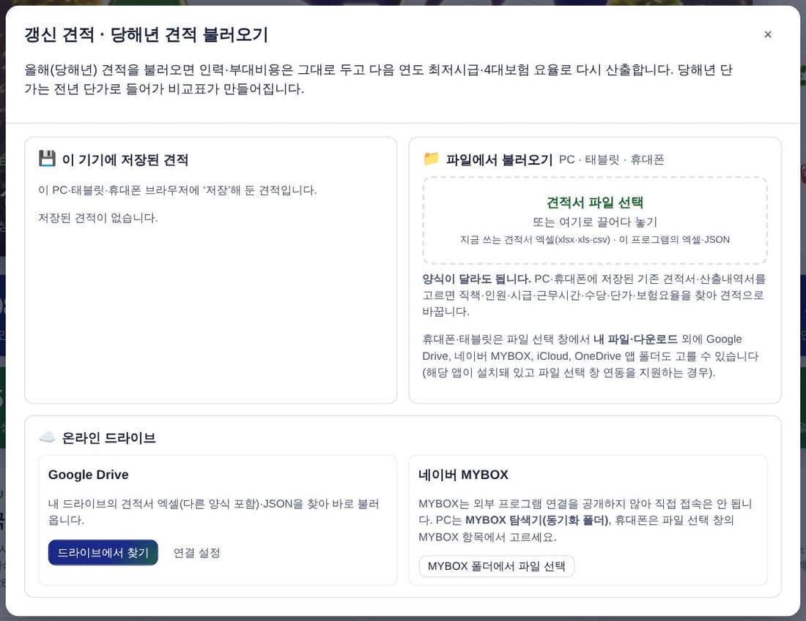
그림 58. 화면
▲ 갱신 견적 — 파일 불러오기 창
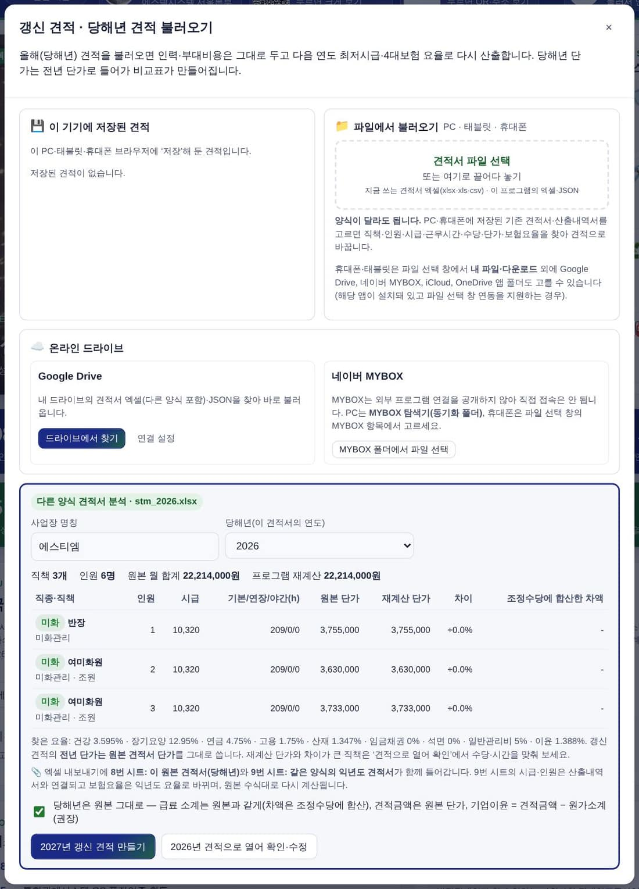
그림 59. 화면
▲ 파일을 불러온 결과 확인
도움말 💡 알아두면 좋아요 Google Drive·MYBOX 등 온라인 드라이브에 있는 파일도 먼저 PC로 내려받은 뒤 같은 방법으로 불러오면 됩니다. |
갱신 견적의 계산 원칙
구분 | 어떻게 계산되나요? |
|---|---|
원본 산식 그대로 | 단수처리 없이 계산하는 양식, 야간(심야)수당의 시간·시급 기준, 만근수당 등 고유 수당의 통상임금 포함 여부, 장애인부담금 방식, 교육·위험부담금 기준(직접노무비), 사람별 이윤율까지 원본 파일에서 찾아 같은 숫자 가 나오게 합니다. |
올해(2026) 산출내역서 | 급료 항목은 원본 금액 그대로, 급료 소계 = 원본 (맞지 않는 차액은 조정수당에 합산). 견적금액은 원본 확정 단가 , 기업이윤 = 견적금액 − 원가소계 (이윤율 탄력). |
내년(2027) 산출내역서 | 최저시급·4대보험을 2027년 기준 + 에스텍시스템 요율 로 바꿔 다시 계산합니다. |
고객사 고유 항목 | 기타수당·간접인건비·복리후생비·제비용 등이 원래 이름 그대로 옮겨집니다. |
업종 구분 | 불러온 파일의 인력을 사람(직급)별로 보안·미화·주차·시설·기타 로 나눕니다. 원본의 용역명이 실제 인력과 다르면(예: 미화 인력인데 ‘보안용역’) 업종에 맞는 용역명 으로 바꿉니다. |
일반직군 연장수당 | 보안 외 업종은 일반근로입니다. 올해(2026)는 원본 금액을 그대로 재현하고(원본이 가산을 안 했으면 그 칸만 배율 1.0 표시), 내년(2027)부터는 1.5배 가산 + 주40시간 초과분 연장 처리 를 적용합니다. |
도움말 💡 알아두면 좋아요 그래서 미화·주차·시설 인력은 원본에 연장수당 가산이 빠져 있었다면 2027년 견적에서 연장수당이 늘어날 수 있습니다. 비교표의 인상액 에서 확인하세요. |
올해(2026) 산출내역서는 이렇게 만들어집니다 (Ver 8.0)
불러온 견적서의 양식이 어떻든 아래 규칙으로 「5. 산출내역서(2026)」를 만듭니다. 그래서 2026년 숫자는 원본 견적서와 같고, 2027년 인상분은 최저시급·요율 변화만 반영됩니다.
항목 | 어떻게 들어가나요? |
|---|---|
기본급 · 연장 · 심야할증 · 휴일 · 직책 · 조정수당 | 원본과 이름이 같은 항목은 원본 금액 그대로 넣습니다. |
원본에만 있는 수당 (예: 만근수당) | 원본 이름 그대로 한 줄로 들어갑니다. |
맞지 않는 차액 | 조정수당 에 더합니다. 그래서 급료 소계(예: 1. 급료및수당 계)는 원본과 무조건 같습니다. 소계 줄 이름이 달라도, 아예 없어도 찾아서/더해서 맞춥니다. |
원본에 없는 경비 | 회의비 · 대치근무비 · 주민세 등 원본에 없는 항목은 넣지 않습니다. |
견적금액(인당) | 원본 견적서의 확정 단가 그대로 (노란 입력칸). |
기업이윤 | 견적금액 − 원가소계 . 원가에 따라 이윤율이 저절로 바뀝니다. 조정수당을 깎아서 단가를 맞추지 않습니다. |
그림 60. 화면
▲ 5. 산출내역서(2026) 아래쪽 — 기업이윤 = 견적금액 − 원가소계, 견적금액 = 원본 확정 단가
도움말 💡 알아두면 좋아요 2027년(3번 시트)은 연장·심야수당을 시간 × 통상시급으로 다시 계산하고, 이윤은 요율표의 이윤율을 씁니다. 예전 버전으로 만들어 저장한 갱신 견적은 그때 숫자가 그대로 남아 있습니다. 새 규칙으로 만들려면 올해 원본 견적서 파일을 다시 불러와 갱신 견적을 새로 만드세요. |
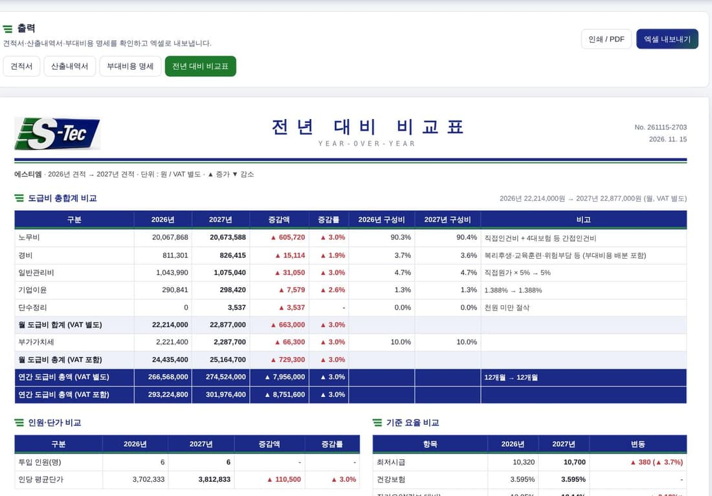
그림 61. 화면
▲ 전년 대비 비교표 — 항목별 인상액이 보입니다
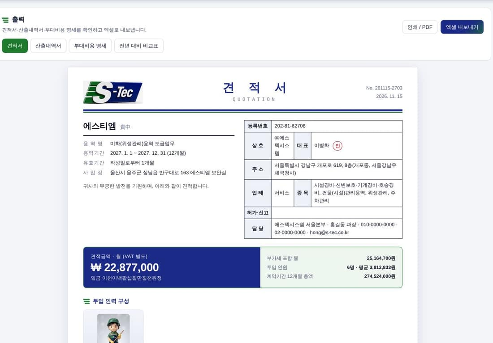
그림 62. 화면
▲ 갱신 견적서
도움말 ⚠ 주의하세요 불러온 금액이 원래 파일과 다르면, 원래 파일에 합계 줄(소계)이 없거나 칸이 합쳐져 있는 경우일 수 있습니다. 2단계에서 인원·시급을 직접 확인해 주세요. |
11. 엑셀 견적서 보는 법
요점 산출내역서의 업종 표시 · 엑셀에서 숫자 고치기 · 엑셀 파일 아래쪽에 시트(탭) 가 번호 순서대로 있습니다. · 제목 : 업종이 들어갑니다. 예) 2027년 에스티엠 미화(위생관리)용역 산출내역서
엑셀 파일 아래쪽에 시트(탭) 가 번호 순서대로 있습니다. 탭을 누르면 해당 문서로 이동합니다.
시트 이름 | 내용 |
|---|---|
1. 표지 | 견적서 표지 (업종에 맞는 용역명 표시) |
2. 견적서(2027) | 고객에게 내는 견적서 본문. 인상액 칸 포함(갱신 견적) |
3. 산출내역서(2027) | 금액 계산 근거. 사람(직급)별 산출기준 · 아래쪽에 공통 산출기준 |
4. 전년대비 비교표 | 2026 → 2027 항목별 비교 (갱신 견적) |
5. 산출내역서(2026) | 3번 시트와 같은 양식의 올해 내역 — 급료 소계·견적금액은 원본과 같고, 이윤 = 견적금액 − 원가소계 |
6. 부대비용 | 차량·장비·기타 비용 세부 계산 |
7. 당해년 견적서(2026·원본) | 올린 원래 파일 그대로 (원본 파일이 이 기기에 있을 때) |
8. 익년 견적서(2027·고객사 양식) | 고객사 원래 양식에 2027 금액을 채운 것 (3번 시트와 연결) |
산출내역서의 업종 표시
- 제목 : 업종이 들어갑니다. 예) 2027년 에스티엠 미화(위생관리)용역 산출내역서
- 제목 아래 줄 : 업종 구분: 미화 6명(일반근로)처럼 업종별 인원과 근로구분
- 사람별 열 맨 위 : 미화 · 일반근로 / 보안 · 감시단속
새로 생긴 줄 | 뜻 |
|---|---|
근로구분 (1=감시단속, 0=일반근로) | 보안 감시단속 승인이면 1, 그 외 0 |
주40h 초과 기본시간 연장 할증 (1=적용) | 1이면 209시간을 넘는 기본시간을 연장근로로 계산. 올해(2026) 원본 재현 칸은 0일 수 있음 |
기본급 산정시간 | 일반근로는 기본시간과 209시간 중 작은 값 (기본급여 = 시급 × 이 시간) |
연장 환산시간 | (연장시간 + 209시간 초과분) × 가산배율(일반 1.5 / 감시단속 1.0) |
일반근로 기본시간 한도 (공통 산출기준) | 기본값 209. 바꾸면 모든 일반근로 열에 적용 |
▲ 2. 견적서 | ▲ 3. 산출내역서 |
|---|---|
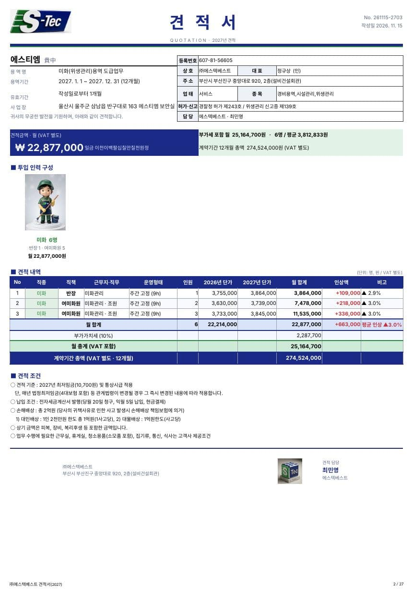
그림 63. 화면
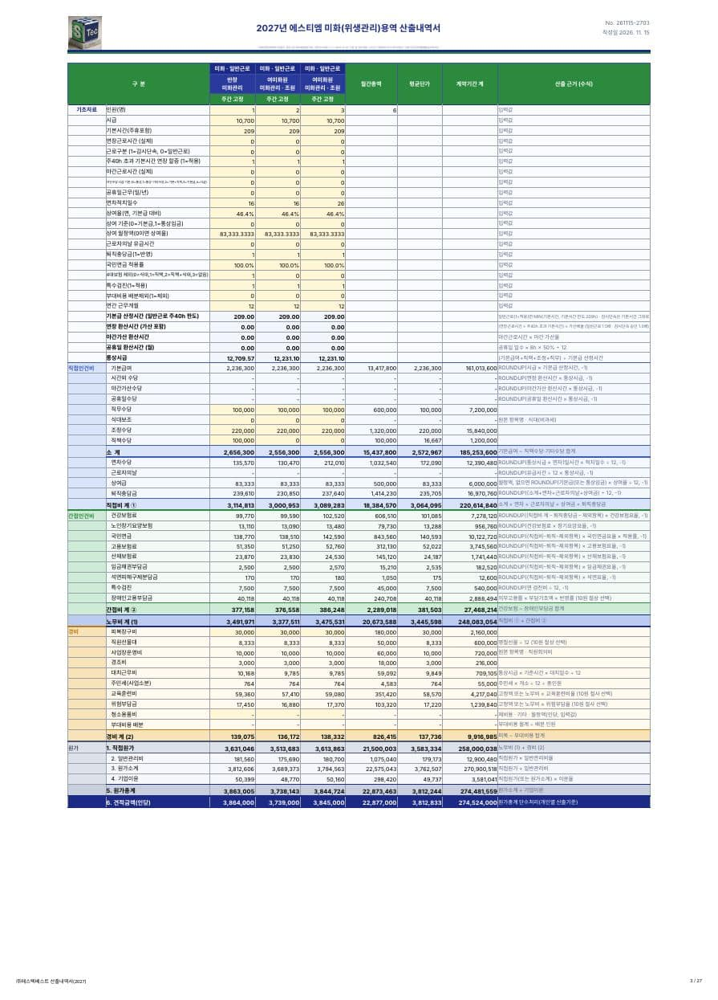
그림 64. 화면
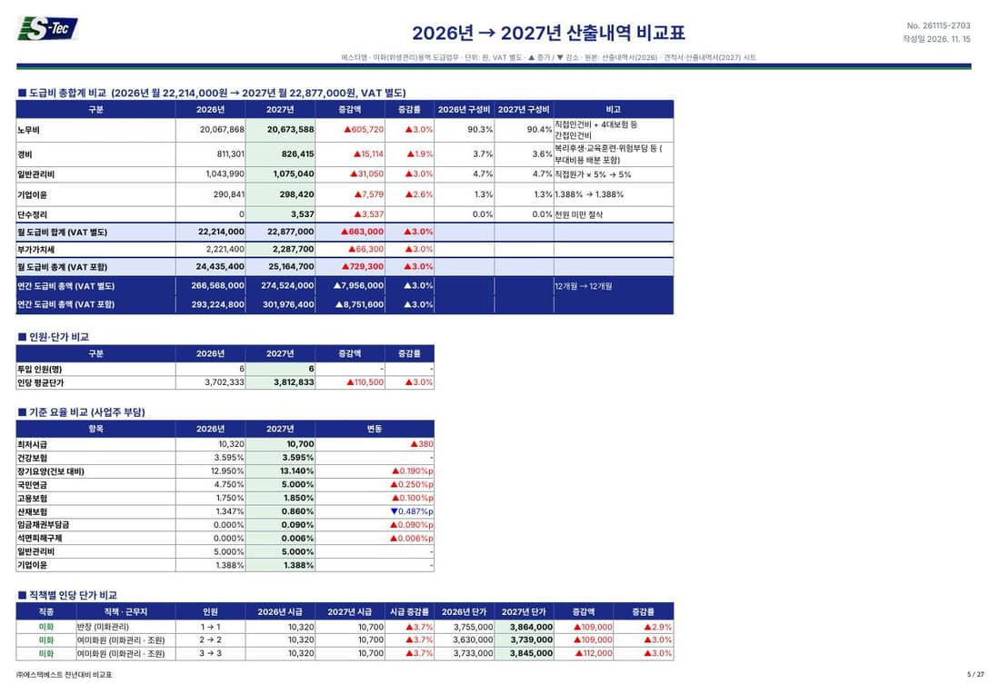
그림 65. 화면
▲ 4. 전년대비 비교표
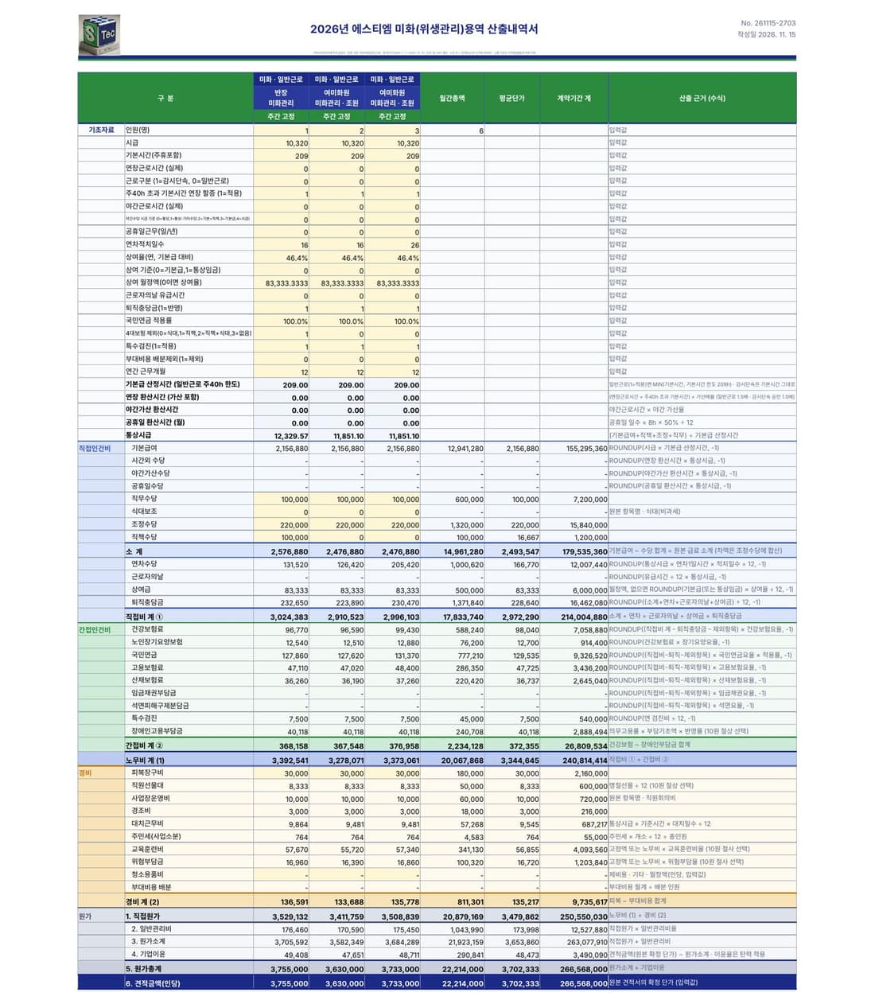
그림 66. 화면
▲ 5. 산출내역서(2026)
엑셀에서 숫자 고치기
- 노란색 칸 이 직접 고칠 수 있는 입력칸입니다.
- 칸을 누르고 새 숫자를 입력한 뒤 Enter 를 누르면, 연결된 합계와 다른 시트(예: 8번 고객사 양식)도 자동으로 같이 바뀝니다 .
- 노란색이 아닌 칸은 계산식이 들어 있으니 지우거나 덮어쓰지 마세요.
도움말 ⚠ 주의하세요 연장·야간 수당 칸은 시간 × 통상시급 계산식입니다. 금액 대신 시간 칸 을 고치세요. |
12. 저장 · 불러오기 · 백업
요점 다시 열기 · 지우기 · 다른 컴퓨터로 옮기기 (백업) · 📂 자료 — 엑셀 양식 받기 · 작성 · 불러오기 (Ver 8.0) · 회사(상호 · 대표 · 사업자번호 · 주소) · 조직(본부 · 지사 · 지점) · …
저장하기
- 위쪽 저장 버튼을 누릅니다.
- 오른쪽 저장된 견적 (이 브라우저) 목록에 사업장 이름과 날짜가 생깁니다.
그림 67. 화면
▲ 저장된 견적 목록
다시 열기 · 지우기
- 목록에서 열기 를 누르면 저장했던 견적이 그대로 열립니다.
- 삭제 를 누르면 목록에서 지워집니다.
다른 컴퓨터로 옮기기 (백업)
- JSON 백업 을 누르면 저장된 견적 전체가 파일 하나로 내려받아집니다.
- 그 파일을 USB·메일·카카오톡 등으로 다른 컴퓨터에 옮깁니다.
- 다른 컴퓨터에서 프로그램을 열고 JSON 불러오기 를 눌러 그 파일을 고릅니다.
도움말 ⚠ 주의하세요 저장은 지금 쓰는 인터넷 창(브라우저) 안에 됩니다. 인터넷 기록(쿠키·사이트 데이터)을 지우면 저장된 견적도 사라질 수 있으니, 중요한 견적은 JSON 백업 이나 엑셀 파일 로 꼭 보관하세요. |
📂 자료 — 엑셀 양식 받기 · 작성 · 불러오기 (Ver 8.0)
회사(상호 · 대표 · 사업자번호 · 주소) · 조직(본부 · 지사 · 지점) · 사업장 자료를 엑셀에 한꺼번에 적어 넣는 기능입니다. 넣은 자료는 견적서의 발행 회사 , 지사 목록 , 사업장 찾기 에 바로 쓰입니다.
그림 68. 화면
▲ 왼쪽 아래 「📂 자료」를 누르면 열리는 창
- 화면 왼쪽 아래 📂 자료 를 누릅니다.
- ① 입력 양식 받기 — 처음이면 📥 빈 양식(엑셀) , 지금 자료를 고치려면 📥 지금 자료 채운 양식 을 누릅니다. 쓰는 법은 📄 작성 안내서(PDF) 에 있습니다.
- 엑셀의 「회사」 · 「조직」 · 「사업장」 시트에 한 줄씩 적습니다. 머리글 줄과 시트 이름은 바꾸지 마세요. (* 표시 칸은 꼭 적기)
- ② 작성한 엑셀 불러오기 → 📤 엑셀 파일 고르기 로 저장한 파일을 고릅니다.
- 미리보기 에서 새로 들어갈 줄(+)과 바뀔 줄(✎), 확인할 점 을 보고 ✔ 적용하기 를 누릅니다.
그림 69. 화면
▲ 미리보기 — 사업장 2줄 새로, 1줄 바뀜 · 확인할 점 1건
도움말 💡 알아두면 좋아요 회사 · 조직 · 사업장은 8개 프로그램이 함께 쓰는 공통 기준정보 입니다. 한 번 넣으면 사업장 지도 · 근태관리 등 다른 프로그램에도 함께 반영됩니다. 공통 기준정보 저장은 제작자 · 관리자만 할 수 있습니다. 일반 사용자는 양식 받기와 보기만 됩니다. 기준정보가 바뀌면 화면 아래에 「🏢 기준정보가 바뀌었습니다 · 새로고침」 안내가 잠시 나옵니다. |
13. 자주 묻는 질문 · 문제 해결
요점 S-Tec-Quotation-System · Produced by Rat Rae C…
Q. 설치한 PC 앱을 열면 404 화면이 나와요.
A. 프로그램 주소가 바뀌었습니다. 예전 앱을 지우고(⋮ → 제거) https://sadness500-boop.github.io/S-Tec-Quotation-System/ 에서 다시 설치하세요.
Q. 「새 기기 승인 대기」가 나와요.
A. 처음 쓰는 기기입니다. 제작자(관리자)에게 이 기기 승인을 요청한 뒤 다시 확인을 누르세요.
Q. 저장 버튼이 흐리게 잠겨 있어요.
A. 이 기기가 조회 전용으로 정해져 있습니다. 화면 위쪽 🔒 안내를 확인하고, 저장이 필요하면 제작자에게 요청하세요.
Q. 지도에 카카오맵이 안 나와요.
A. 카카오맵은 인터넷 주소(https://sadness500-boop.github.io/S-Tec-Quotation-System/)로 열었을 때 동작합니다. 앱이나 PC 파일로 열었으면 기본 지도(OSM)가 대신 나옵니다. 견적 계산에는 영향이 없습니다.
Q. 내 위치가 엉뚱한 곳으로 나와요.
A. PC는 인터넷 주소로 대략 찾기 때문에 틀릴 수 있습니다. 더 정확하게 를 누르거나 지도에서 직접 지정 으로 고치세요.
Q. "위치 권한"을 거절해 버렸어요.
A. 인터넷 창 주소 왼쪽의 자물쇠 아이콘을 누르고 위치 → 허용 으로 바꾼 뒤 새로고침(F5) 하세요.
Q. 금액이 이상하게 나와요.
A. 2단계 인력 카드의 인원·시급·근무형태 를 먼저 확인하세요. 그다음 4단계의 일반관리비·이윤 %를 확인합니다.
Q. 갱신 견적 파일을 불러왔는데 오류가 나요.
A. 파일이 엑셀(.xlsx) 형식인지 확인하세요. 암호가 걸린 파일은 암호를 풀고 다시 저장한 뒤 불러오세요.
Q. 엑셀 파일이 어디 저장됐는지 모르겠어요.
A. 보통 내 PC → 다운로드 폴더에 있습니다. 인터넷 창에서 Ctrl + J 를 누르면 다운로드 목록이 열립니다.
Q. 화면이 너무 어두워요 / 밝아요.
A. 오른쪽 위 주간 / 야간 / 시스템 버튼으로 바꾸세요.
Q. 미화(주차·시설) 견적인데 연장수당이 작년보다 올랐어요.
A. 보안 외 업종은 일반근로라 2027년부터 연장시간에 1.5배 가산 이 붙고, 주40시간(209시간)을 넘는 기본시간도 연장근로로 계산되기 때문입니다. 원본에 가산이 빠져 있던 경우 금액이 오릅니다.
Q. 로그인 화면에서 ‘승인 대기 중’만 나와요.
A. 가입 신청 후 제작자가 아직 승인하지 않은 상태입니다. 승인 연락을 받은 뒤 다시 확인 을 누르세요.
Q. 비밀번호가 기억나지 않아요.
A. 로그인 화면의 비밀번호를 잊었어요 로 재설정 메일을 받거나, 제작자에게 임시 비밀번호 를 요청하세요.
Q. 휴대폰에서 저장한 견적이 PC에 안 보여요.
A. 두 기기 모두 같은 아이디로 로그인 했는지 확인하고, 위쪽 내 계정 → 지금 동기화 를 누르세요.
Q. 새 버전이 나왔다는데 화면이 그대로예요.
A. 키보드 Ctrl + F5 를 누르면 최신 버전으로 새로고침 됩니다. 휴대폰은 앱을 완전히 닫았다가 다시 여세요.
S-Tec-Quotation-System · Produced by Rat Rae Choi
Designed & Developed by Rat Rae Choi